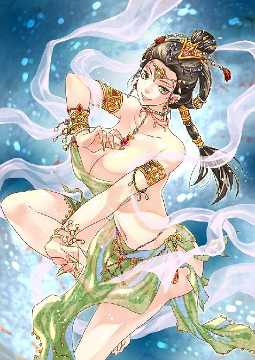
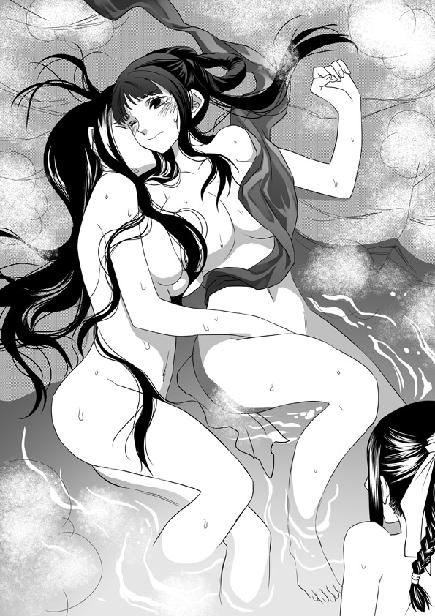
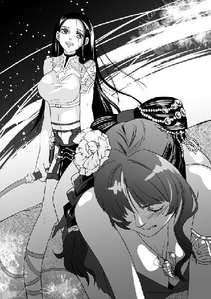

第10集·鬼峒巫王
南荒篇（7/9）
出版日期：2010-05-14
【本集内容简介】
没想到红苗人一进入鬼王峒就被驯服，在这诡秘、四面楚歌的地方，程宗扬等人不再有友军，一切只能靠自己。为了救回乐明珠，他们决定分批杀入鬼巫王的宫殿……
终于发现令众人一路上迭遇险境的罪魁，没想到那张纯真面容底下隐藏着满是恶意的面孔，相比于那位怀抱“过于远大”志向的鬼巫王，程宗扬更畏惧这个带着伪装与自己相伴的少女——小紫！
※ ※ ※ ※ ※

封面人物：碧宛

插图：温泉三女

插图：小紫、阿依苏荔
隐藏在阿夕身后的操纵者像根刺扎在心头，让程宗扬心神不宁。苏荔她们去寻找红苗盟友，到现在也没有音讯，更让自己坐立不安。
很难判断现在是什么时候，深藏地下的鬼王峒如同失去了时间，只有黑夜漫长得没有尽头。
程宗扬第十五次站起来，去看凝羽回来没有。刚起身，旁边的谢艺突然睁开眼睛，露出倾听的神色。
程宗扬连忙竖起耳朵，半晌才勉强捕捉到一丝微响。那声音绕过重重岩壁，已经变得微弱之极，然而充满杀伐的节奏，仍让自己汗毛直竖。那是鬼王峒青铜战鼓的声音，难道是凝羽？
程宗扬叫道：“不好！”
鼓声越来越响，突然间脚步声响起，易彪、吴战威等人听到鼓声，都奔了过来。
谢艺道：“她们回来了。”
程宗扬迟疑了一下，才意识到他说的是苏荔，不由又多了一分佩服。能从纷杂的声息中辨出苏荔的脚步，这份修为比自己可强太多了。
苏荔弯眉紧锁地踏入厅堂，后面是黑着脸的武二郎。凝羽摘下面纱，摇了摇头，“没有找到。”
只要凝羽能无恙归来，其他的程宗扬都不在乎，但听到她们没寻到红苗的盟友，仍忍不住讶道：“红苗人还没来？”
“三天前就到了，”苏荔道：“我们见到他们入峒时留下的标记，但再找就没有了。这里有上百个部族，也许我们错过了。”
“你们不是有个当厨子的内线吗？”
苏荔摇了摇头，“他是红苗人，和我们没有联系。”
武二郎不耐烦地说道：“费什么事儿呢，把咱们能打的全拉过来，直接踹门不就得了！先说好，鬼巫王那家伙是我的！二爷要让你们伸一指头就是孙子！”
“二爷好气概，”谢艺微笑道：“不过鬼王峒属下有上万之众，武二爷又能杀得了多少？”
“你说咱们动手，他们会帮鬼王峒？”武二郎横起眼睛，“没睡醒吧？谁当奴隶还当出瘾了？”
谢艺淡淡道：“这些人不能以常理论之。”
“是的。”赞同他的居然是苏荔，“我和那些人交谈过，他们把鬼王峒的人都当成神，敬畏得甚至超过了自己的祖神。”
凝羽忽然道：“我要下去看看。”
程宗扬一怔，“去哪儿？”
“鬼王宫。”
“不行！”程宗扬道：“这里山洞比迷宫还乱，就是有人带路，也不一定能出来。”
易彪道：“辨迹寻径，在下颇有一些心得。”他本来性直气烈，只是兄长出了意外之后，担子都落在他肩上，性格谨慎了许多。但这时还是露出性急的一面。
程宗扬道：“下面有机关！”
“什么是机关？”苏荔对这个名词不太熟悉。
“一种杀人的陷阱。”谢艺道：“谢某在下面受了伤。”
苏荔扬起眉毛，“你看到了什么？”
“巫师。”谢艺笑了笑，“我猜他们在炼制鬼战士。”
众人面面相觑，苏荔起身道：“我也去！”
眼看众人群情耸动，又要演变成上次的大表决，程宗扬连忙站起来，“这就别争了，要去大家都去。不过不是这会儿，”他一指谢艺，“总该让谢兄把伤养好吧？”
祁远的咳嗽声从门外传来。程宗扬打了个噤声的手势，推门出去。
来的是弥骨。他说阁罗大人在处理事情，让弥骨来问他的朋友们，是否还需要什么东西。
程宗扬笑着攀谈几句，然后道：“外面像是在敲鼓？”
弥骨道：“那是召集奴隶的鼓声，他们要去地火深渊做工。天快亮了。”
程宗扬松了口气，仿佛无意地说道：“我们做生意的时候路过红苗，听说红苗也派人向鬼巫王大人表示臣服。他们也住在上面吗？”
“峒里的部族太多了，卫兵也许知道。等等！”弥骨难得地停顿下来，转着眼珠想了一会儿，“红苗……红苗……”
他忽然一拍额头，“弥骨知道——她们送新娘来！”
程宗扬眼睛一亮，“她们在哪里？”
弥骨跳起来，“我带你去！”
※ ※ ※ ※ ※
沉闷的铜鼓声在山腹内回荡，无数奴隶从藏身的洞穴钻出。他们来自南荒不同的部族，有的身上带着野兽的斑纹，有的躯肢异化成兽体，呈现出半人半怪的异态。他们大都带着工具，面无表情地朝鼓声传来处聚集。
走在这些兽化的变异人中间，就像在电影的场景中穿行，充满了不真实的感觉。程宗扬不禁想起段强，如果他在这里，一定会后悔自己没有带摄影机。
弥骨一条腿无法伸直，走路时一颠一颠的，速度却极快。人流虽然拥挤，但一见到弥骨就远远避开，给他让出一条通道。
“红苗人有二十个强壮的男人，都是很好的战士。”弥骨扭头朝苏荔龇出牙齿，“你们的战士太少了，不过女人很好。花苗族长，你会让巫师们头痛的。”
苏荔握住程宗扬的手，她手心湿湿的都是汗水，勉强笑道：“为什么呢？”
弥骨猛地凑过来，带毛的面颊牵出一个可怖的笑容，“你很强健，他们不知道该让你成为战士还是女奴。”
苏荔手指紧了一下。弥骨说巫师正在进行仪式，除了程宗扬不愿意再带人去。而他们的仪式正是苏荔最大的担忧。即使南荒最悍勇的部族，一旦归服鬼王峒，就驯服如同羔羊，一直让苏荔无法理解，也许秘密就在于弥骨所说的仪式中。
在程宗扬的游说下，最后弥骨勉强答应带上苏荔，但自从进鬼王峒就紧贴着她的武二郎只能留在驿馆。
弥骨朝苏荔雪白的大腿上飞快地抓了一把，然后怪笑着跳开。而苏荔只能面带微笑，表示对他的唐突并不在意。
鼓声停止的一刻，密集的人群仿佛突然消失了一样，街市变得冷清。不时飘过的磷火，让空荡荡的洞窟犹如鬼域。
走在奴隶们聚集的洞窟间，程宗扬才知道这里有多简陋。鬼王峒给奴隶们提供的只是一个勉强可以容身的地方，蜂窝般密布的洞穴简单异常。有的洞口挂着破旧的兽皮，更多的连兽皮都没有，就是一个空空的石窟，偶尔有一些粗糙的竹木物品。
弥骨左看右看，忽然叫道：“这里！”
弥骨钻进街旁密如蛛网的小径，领着两人来到一座岩洞前。洞口挂着一张崭新的兽皮，上面描绘着红苗人骄傲的巨蝎图腾。弥骨拉开兽皮，一股奇异的味道随之飘逸出来。
将近三十人居住的洞穴仍然显得很拥挤，一堆篝火在黑暗中燃烧，旁边一个额头刺青的红苗汉子单膝跪在地上，在他身前，一个生着鬼角的巫师低声念诵着什么。
“娄蒙！”苏荔低声叫道。
娄蒙是红苗族长的儿子，也是红苗未来的继承人。红苗和花苗血缘相近，又同时面对鬼王峒的威胁，娄蒙的妻子丹宸未嫁前是苏荔的闺中密友，两族能够结盟，娄蒙夫妻是最有力的扶持者。这次来鬼王峒，就由他们亲自带队。
但此时娄蒙对苏荔的呼唤充耳不闻，他眼神涣散，脸上带着莫名的笑容，似乎正沉浸在无法言说的欢喜中。
“你认识他？”
不等苏荔回答，弥骨就飞快地说道：“他很厉害，巫师说他心里有一个秘密，今天已经第三次给他举行仪式。”
弥骨朝巫师打了个手势，然后蹿到洞内。巫师对他的闯入只翻了翻眼睛，念诵声丝毫未停。娄蒙却似乎完全丧失了意识，连视线也没有一丝移动。
山洞被几根竹子隔开，洞窟一侧，一个披着盖头的少女躺在榻上，两个伴娘正托起她雪白的玉臂，在她肌肤上涂抹着芳香的油膏。
“这是红苗的新娘。”弥骨咕咕笑道：“等鬼巫王大人出关，就该享用她们香喷喷的肉体。”
那三名少女穿得极少，暴露出大片大片雪白的肌肤，和娄蒙一样对他们的闯入毫无反应。弥骨虽然垂涎欲滴，却不敢停留，领着他们朝洞内走去。
忽然，一声轻笑从洞穴深处传来。笑声像水波一样，令人怦然心动。
隔着竹竿，能看到一张破旧的竹榻，上面不知被多少汗水污渍浸过，被染成黑色。榻旁，一个美貌的红苗女子身无寸缕，正赤裸着白艳的肉体，吃吃娇笑。
在她身前站着巫师的鬼仆，一个狗头人身的怪物。他吐出鲜红的长舌在女子脸上舔着，一边伸出毛茸茸的手爪，探到女子腿间。
苏荔一颗心直沉下去。那是丹宸，她幼时的好友。
半人半犬的怪物挺起野兽的阳具，喉中发出狺狺的叫声。丹宸满脸都是鬼仆的唾液，她娇笑着握住血红的兽阳，一边踮起脚尖，挺起下腹，将下体娇艳的性器放在阳具顶端，来回摩擦。
弥骨“吱吱”叫着蹿进去，用力在丹宸雪白的屁股上打了一记。丹宸身子一颤，蜜穴向下一挤，顿时被兽阳粗大的龟头塞满。
狗头鬼仆带着狺狺的犬吠声叫道：“弥骨！我听说达古死了！”
弥骨颈中裸露的血管兴奋地跳动起来，“已经死得不能再死了！她已经开始听话了吗？达古那对孪生妻子已经是女奴，服侍过阁罗大人！我没闻到魂香的味道！”
狗头鬼仆露出讨好的笑容，对弥骨说：“这个红苗女人已经被驯服了，玩起来很有趣。”
他狺狺叫了几声，丹宸挺起下体，一手分开蜜穴，一手握着他粗壮的阳具，就像拿着一根烧红的铁棍一样，在自己体内捅弄。她不时发出吃吃的娇笑声，一边口齿不清地呻吟道：“好……好舒服呢……”
程宗扬感觉到苏荔的手掌在颤抖，她陌生地望着自己的好友，双脚像被钉在地上一样无法移动。
程宗扬在她耳边低声道：“别担心，既然是巫术，肯定有破解的方法。”
虽然在宽慰苏荔，程宗扬自己心里也充满犹疑，难道鬼王峒真有巫术可以改变人的思维？看这个红苗女人的举动，就像是完全被人洗脑了一样。
弥骨忍不住加入进去，和狗头鬼仆一起把丹宸压在污黑的竹榻上。丹宸一边张开腿与狗头鬼仆交媾，一边把脸贴在弥骨毛茸茸的腹下，舔舐他的阳具。她脸上笑容满面，丝毫没有为难的表情。
丹宸雪白的肉体与两个丑陋的怪物纠缠在一起，在竹榻上翻滚起伏，激烈地交合着。她趴在狗头鬼仆身上，用蜜穴套弄他的阳具。弥骨扒开她的臀肉，从后面骑在她屁股上，用力插进她体内。丹宸露出一丝痛楚的表情，紧接着又绽露笑靥，一边与狗头鬼仆亲吻，一边又被弥骨拽着头发扭过脸，与他唇齿相接，臀部卖力地挺动着，用自己的性器和肛门同时服侍着两名鬼仆。
苏荔脸色雪白，手指像冰一样寒冷。程宗扬轻轻一推，把她挡在身后。
不知过了多久，两名鬼仆嘻笑着从竹榻上爬起来，红苗美妇娇喘着软绵绵趴在榻上，她胴体上布满爪痕，雪臀被干得敞开，屁股里面灌满精液，脸上却带着幸福的笑容。
“把他们引出去。”苏荔用乞求的口气对程宗扬说。
程宗扬松开她的手指，朝弥骨走过去。
弥骨笑道：“这个红苗女人很好玩，程商人你也来试试。”
“的确很漂亮，”程宗扬话锋一转，“阁罗大人应该已经忙完了。我们也该回去了。”
弥骨疑惑地说：“程商人不想试试红苗的女人？”
程宗扬嘿嘿笑道：“我对年轻一点的感兴趣……”他一指红苗的伴娘，“这个怎么样？”
弥骨大摇其头，“她们是献给鬼巫王大人的礼物。”
“那就换她吧。”程宗扬指向新娘说。
弥骨头摇得更厉害了，“那是献给龙神的新娘。”
程宗扬笑道：“每个部族都送女人来，鬼巫王大人的新娘可真不少。”
弥骨喉中发出“咕咕”的笑声，似乎想说什么，却又闭上嘴。
程宗扬手一扬，抛出几枚钱铢，笑嘻嘻道：“好几天没有赌钱，有点手痒……想不想来一把？”
弥骨和狗头鬼仆对视一眼，“赌钱？”
“就是我出钱，你们来猜。只要猜中，这钱就是你们的。”
两名鬼仆盯着程宗扬手里的钱铢，露出贪婪的神情。
程宗扬捡出一枚钱币，往空中一抛，然后接住，把拳头伸到狗头鬼仆面前，“猜猜，是正面是反面？”
长着狗头的鬼仆迟疑了一下，弥骨抢着道：“正面！”
程宗扬手张开一线，瞄了一眼，然后道：“你赢啦！这是你的了。”
程宗扬把钱铢抛给弥骨，弥骨一把接住，喜得抓耳挠腮。
程宗扬又出了几把，让弥骨赢了五枚铜铢，等两人兴趣都被勾了上来，他却停了手，“这里太气闷了，不如咱们换个地方玩。”
“这里这里！”弥骨立刻蹿了出去。
程宗扬朝苏荔使了个眼色，跟着两名鬼仆离开洞穴。
外面巫师仍在念诵咒语。赤裸的红苗女子伏在榻上，股间淌满精水。她在刚才的交合中耗费了大量体力，这时正闭着眼睛，满脸幸福地回味着。听到身旁的脚步声，丹宸扭过脸，眼睛忽然一亮，“阿荔！”
苏荔走到榻旁，望着自己的好友，一时间不知道怎么开口。
“你们刚到吗？”丹宸撑起身体，开心地想拥抱苏荔。
苏荔退开一步，脸色雪白地说：“你没有穿衣服。”
“这样不好吗？”丹宸毫不介意地轻笑道：“刚才我还在和两个主人交媾，他们很满意呢。”
丹宸的口气让苏荔心头抽紧，“他们是谁？”
“是鬼王峒的主人。”丹宸摇头笑道：“我们以前真是太傻了，还想反抗神圣的鬼巫王大人。自从到这里，我才知道鬼巫王大人有多么伟大。他就像太阳，是南荒唯一的神明。”
苏荔从牙缝中说：“是吗？”
红苗美妇毫不在意地站在苏荔面前，带着无比的崇慕说道：“是他创造了光明，他是超越一切的存在。”丹宸像叙说一个秘密一样，在苏荔耳边道：“听过巫师的劝导，我才知道自己有多么愚蠢。可巫师一点都不嫌弃我的无知，很慷慨地允许我加入鬼王峒。”
“你知道吗？”丹宸兴奋得双颊微微发红，“来到鬼王峒第一天，我就被允许成为侍寝女奴，用我卑微的身体服侍巫师和他的仆人。”
“他的仆人？”苏荔无意识地重复道。
“是巫师大人的仆人，”丹宸带着一丝得意，向苏荔骄傲地炫耀，“他们对我的身体很满意。你看，这就是他们刚射到我身体里面的，有好多呢。”
丹宸当着苏荔的面分开双腿，露出沾满精液的下体。苏荔强压着心头的反感，沉声问道：“娄蒙呢？他是你的丈夫。”
红苗美妇笑了起来，“他知道我被选中服侍鬼王峒的主人，也会为我感到光荣。”
“阿宸！”苏荔再也无法忍受下去，用斥责的口气低喝道：“你的贞洁和骄傲呢？”
丹宸奇怪地看着她，“他们是鬼王峒的人。这里是神的部族，即使一个渺小的仆人，也比我们的祖神更尊贵。阿荔，我很同情你。”丹宸拉住苏荔的手，诚挚地说道：“你和我以前一样无知，不知道服侍鬼王峒的主人才是最大的幸福，才是我们的骄傲和光荣。”
苏荔久久没有作声。然后她深深吸了口气，露出笑容，“真是太好了。我真羡慕你，阿宸，能成为鬼王峒主人满意的女奴。”
丹宸开心地说道：“你也会是的。”
苏荔不再去徒劳地劝说自己的朋友，仿佛不经意地说道：“和你一起来的红苗战士呢？”
“他们去给鬼巫王大人制造武器，还有几个最强壮的，被挑中成为鬼王峒的战士。”丹宸眼睛闪闪发光，“这是我们红苗人的骄傲。”
苏荔紧盯着她的眼睛，“那你告诉过他们，我们的准备吗？”
丹宸不好意思地说：“我还没有来得及说……”
苏荔略微松了口气。忽然，娄蒙大声嘶吼起来，他像狮子一样闯进山洞，双手抱头，用发红的眼睛瞪着苏荔，然后吼叫道：“杀了我！杀了我！”
巫师从后追来，木杖狠狠点在娄蒙脑后。年轻的红苗汉子砰然倒地，昏迷过去。
巫师阴沉着脸收回木杖，冷冷盯着娄蒙，接着恼怒地拽住丹宸的长发，把她的面孔按在自己胯下。
丹宸玉颊兴奋地泛起玫瑰般的红晕，她跪在巫师身前，乖巧地把面孔伸到巫师肮脏的衣袍内，含住他的阳具。
巫师瞳孔缩紧，像针尖一样盯着苏荔，然后抬起木杖，伸进她丰腻的乳沟，用杖尖去挑弄她的乳头，说道：“卑贱的女奴。”神情间充满不屑。
苏荔衣襟被木杖拨开，裸露出高耸的乳峰，红艳的乳尖挺翘出来，在杖下软软摇动。她唇角的笑容突然间变得残忍，然后筒裙一动，一条银白色的蝎尾弯曲着掠出，闪电般缠在巫师颈中，锋利的尾钩狠狠刺进他的动脉，撕开他的脖颈，鲜血飞溅而出。
※ ※ ※ ※ ※
弥骨哭丧着脸，眼巴巴看着程宗扬身前的铜铢。
“看好了！”程宗扬把铜铢放在手心，然后一翻手，“啪”地按在地上。
两名鬼仆看得清清楚楚，他手里的钱铢是铸着印文的一面朝上，翻过来应该朝下，可程宗扬移开手，赫然仍是印文一面朝上。
这是程宗扬小时候常玩的游戏，在翻掌的同时，手心是空的，用手掌边缘一碰，让硬币在手心遮掩下翻转过来。这个技巧并不难，但由于有手掌遮掩，很难察觉到他手掌的动作。
程宗扬先输给他们几十枚铜铢，然后毫不客气地赢了回来，还把弥骨仅有的几枚铢钱都搜刮干净。
估计时间差不多了，程宗扬拍了拍手，“不玩了，不玩了！”
弥骨吱吱叫道：“不行！不行！”
程宗扬摆出不耐烦的架势，“你都没钱了，还玩什么？”
弥骨和狗头人垂头丧气，依依不舍地看着程宗扬把钱铢拢成一堆。
地上的钱铢并不多，总共才几十枚铜铢，程宗扬随手分成两份，笑道：“你们的钱我怎么能赢？玩两把过过瘾。这钱就分给两位，大家交个朋友。”
说着程宗扬把钱铢往两人面前一推。两名鬼仆输得脸都绿了，这会儿顿时心花怒放，对这个外地来的商人更是刮目相看，觉得他简直比亲人还亲。
弥骨找的地方十分宽敞，气流不断从黑暗中涌来，仿佛置身于旷野中。两名鬼仆贪婪地抓住铜铢，塞进口袋。忽然大地微微一震，一道血红的光芒蓦然划破黑暗，接着一股炽热的气流涌入洞穴，程宗扬的头发、眉毛都为之卷曲。
这时程宗扬才发现，他们待在一个巨大的洞口内，陡峭的岩壁一直延伸到百余丈下的深渊内。渊底焦黑色的土地裂开，一道道岩浆火蛇般奔涌而出，仿佛大地撕裂的伤口，热血滚涌。
从洞口望去，数以万计的奴隶如同蝼蚁一样在渊底劳作，他们冒着令人发狂的高温用岩浆冶炼矿石，锤打铁块，皮肤被烈焰烤炙得干枯。不时有奴隶被突然喷出的岩浆吞没，空气中弥漫着死亡的气息。
无数铁砧敲击的声音汇集在一起，形成一种低沉的震响，在空间中回荡，如同大地沉重的心跳。
猿猴一样的弥骨站在悬崖边缘，他一手抓着钱铢，手舞足蹈地叫着：“天亮了！天亮了！感谢神圣的鬼巫王大人！”
※ ※ ※ ※ ※
渊内岩浆奔涌，整座鬼王峒都浸浴在暗红色的光线里，山峰苍黑的边缘犹如正在淬火的刀锋。
炙人的热浪即使在驿馆也能感觉到。武二郎把上衣扒到腰间，光着虎斑纵横的上身，困兽一样在厅内走动，瞧谁都瞪着眼，一副随时想跟人较劲的模样。商队的汉子们都不作声，一个个拿出暗藏的兵器，埋头把刀锋磨得雪亮。
厅外响起花苗女子的歌声，只有她们仍显得旁若无人，似乎没有任何恐惧和烦恼。
“那个巫师到底去了哪儿？”程宗扬问道。
他和两名鬼仆回到红苗人居住的洞窟，只见苏荔在洞口等着，那个红苗汉子伏在地上昏迷不醒。巫师和丹宸都不见踪影。
苏荔说巫师施完术就带着丹宸离开，不知去了哪里。生着狗头的鬼仆将信将疑，程宗扬可是一点都不信。他压下疑问，回到驿馆才开口。
苏荔鲜红的唇角微微翘起，“被我吃了。”
“哈！”程宗扬嘻笑着摇了摇头，但看到苏荔的眼神，他不禁打了个突——这女人是玩真的？
“你不信？”苏荔走到程宗扬面前，“你闻，我嘴里还有他血肉的气味。”说着她张开口，轻轻呵了口气。
苏荔的气息香馥无比，看着她丰润而娇艳的红唇，程宗扬咽了口唾沫，干笑道：“是武二的味道吧。”
苏荔啐了一口。过了会儿，她忽然道：“谢谢你。”
“我有什么好谢的？”
“如果不是你，我也会和丹宸一样。”苏荔低声说着，眼里流露出深深的屈辱和恐惧。
想到丹宸的举动，程宗扬也无法理解，“她怎么会……”
“他们把肮脏的东西灌输在她心里。”苏荔说：“她已经不是我认识的那个红苗女子了。”
苏荔自失地一笑，“我们确实太天真了，以为来到鬼王峒就能杀死鬼巫王。可我们连那个恶魔的面都没见到，红苗人就已经成为他的奴仆。”
苏荔握住自己的手腕，“娄蒙让我杀死他。他是个勇敢的男人，像树一样强健，像水一样聪明，可他连自己的妻子都无法保护。”
苏荔贴近过来，轻声道：“你能保护我吗？”
“我？”程宗扬笑道：“武二爷可比我强多了。”
“你的血液……很奇特，好像充满了生命的力量。”苏荔道：“我还是第一次遇到阴煞惧怕的人类。”
这女人的直觉真是惊人。程宗扬笑道：“要说生龙活虎，还得数二爷吧。”
“是吗？”苏荔展颜一笑，笑容艳丽得让程宗扬心头一阵乱跳。不知道是不是自己的错觉，今天苏荔的一举一动都显得十分暧昧。
“我们花苗女人……”苏荔呵气如兰地说：“婚前可以有很多男人。”
这种赤裸裸的暗示让程宗扬有种玩火的感觉，她可是武二的女人啊。和武二那头恶虎抢女人……这暧昧搞得也太刺激了吧？
苏荔双臂抱在胸前，明艳的凤目波光转动，她挺起身，一条雪白的大腿不经意地从裙缝中探出，大腿上端的纹身鲜明无比，充满了女性的诱惑力，媚眼如丝地说道：“阿夕只是个小孩子，还不知道怎么让男人快乐。”
程宗扬呆了一会儿，然后苦笑道：“苏荔族长，你就别逗我了。让武二郎看见，我可麻烦大了。”
苏荔充满挑逗地瞥了他一眼，“这里很安静。”
程宗扬叹了口气，“大姐，我不知道你怎么会想拿我寻开心。不过你这肢体语言也太明显了吧？双手抱胸，那是典型的防御姿态。你要真想跟我上床，用不着这么戒备吧？”
被他说中心事，苏荔身体微微一僵，接着紧绷的肢体放松下来，又露出媚惑的笑容，“如果我是认真的呢？”
“那你肯定是有其他目的。好了大姐，有什么事咱们直说吧，只要我能帮上忙，绝不推辞。色诱就免了，我不是怕你，实在是怕武二。那家伙见树还要踹三脚呢，在他嘴边夺肉，嘿嘿……”
“胆小鬼。”苏荔轻啐一口，然后似笑非笑地看着他，慢悠悠道：“我的目的，就是和你上床。”
“我的朋友呢？”阁罗低沉的嗓音传来。
程宗扬正瞪着苏荔，听到声音立刻跳起身，他一边用力揉着脸，抹去发呆的表情，一边迎了出去。
阁罗皱起眉头，“朋友，你有心事吗？”
程宗扬哀声叹气地说：“阁罗老兄，你该提醒我一下。看到岩浆突然喷发，我吓得差点转身就逃。”
阁罗哈哈大笑，“是鬼巫王大人神圣的力量，给我们带来光明！”他骄傲地说道：“来自地火深渊的烈焰，使我们能够不停地把矿石冶炼成武器，成为南荒最强盛的部族。”
程宗扬好奇地问：“有了鬼巫王大人才有岩浆喷发吗？”
阁罗抚摸着脑后的鬼角，“在鬼巫王大人之前，我们鬼王峒都生活在黑暗当中。他淘汰了族中的弱者，让我们长出坚固的鬼角，与龙神结盟，使我们变成最强悍的战士，征服了一个又一个部族……他的功绩就像天上的星星一样多，七天七夜也无法说完。”
难怪走惯了南荒的祁远和云苍峰对鬼王峒都不是很了解，听阁罗的口气，鬼王峒的崛起也就是最近十多年的事。不过它膨胀的速度实在骇人，短短十几年，就从深居地下的弱小部族成为南荒的王者。
“我听弥骨说，你昨天没有尽兴，这让阁罗很遗憾。”阁罗道：“我已经让碧奴去调教那对女奴，教她们学会怎么奉承主人。今天晚上……”
看着阁罗目光投向自己身后的苏荔，程宗扬心叫不妙，连忙岔开话题，干笑道：“鬼巫王大人实在太伟大了，也只有那位出色的石匠，才有资格为鬼巫王大人雕刻纪念。”
阁罗赞同地点了点头。程宗扬不等他把话题引到苏荔身上，接着说道：“还有这座馆舍，比起六朝的宫室也不逊色。不知道它出自哪位大师的手笔？”
阁罗犹豫了一下，“是一位外地客人。”
“外地的客人？”程宗扬像是突然想起来一样拍拍额头，“是和那位石匠一起的吧？这样的高人，不知道鬼巫王大人是从哪里请来的？”
“不必问了，我的朋友。他们很快就会离开。”说着阁罗摸了摸下巴，命令道：“花苗的女人，过来，让我看看你的身体！”
阁罗根本没有理睬苏荔是否答应，就转头对程宗扬笑道：“我们可以一起来享用这个花苗的族长，把她调教成听话的奴隶。”
程宗扬就是怕这个才转移话题。回头的一刹那，他清楚看到，苏荔眼中一瞬间杀机大盛。程宗扬连忙拉住阁罗，低声道：“其实……我对昨天的碧奴念念不忘。呵呵，那样艳丽的舞姬实在太奇妙了，除了伟大的鬼王峒，世间再找不出第二个。”
阁罗被他夸赞得满心得意，接着程宗扬话锋一转，一脸惭愧地笑道：“只不过小弟性子有些内向，昨天那么多人，实在放不开。如果老兄能安排我们私下见见面，小弟就感激不尽了。”
阁罗大笑道：“你们六朝人最是拘谨，丝毫不知道怎么享受女人。弥骨！你带程商人去见碧奴，让她用心服侍我的朋友！”
程宗扬涎着脸拍了拍苏荔肥翘的屁股，在她脸色转变前连忙放手，对阁罗说道：“这个女奴我也很有兴趣，不如我们改日再找个机会一起上她。哈哈，能和阁罗老兄一起玩花苗的族长，肯定其乐无穷。”
阁罗虽然不舍，但还是大度地说道：“朋友，你今天尽情享受吧，明天我们再来品尝这些新鲜女奴的滋味。”
程宗扬松了口气，苏荔也收敛了眼中的锋芒，装作羞涩地低下头，一边亲密地拥住程宗扬的手臂，报复地狠拧了一把。
※ ※ ※ ※ ※
碧奴的住处并不远，门外立着那个铁塔般的鬼武士。弥骨朝他比了几个手势，然后讨好地替程宗扬拉开帘子，一股充满肉欲的香气扑面而来。碧奴细柔的声音在帘后响起：“舌头要来回转动，嘴唇含紧……”
眼前的洞窟虽然比不上驿馆和会所华丽，但比奴隶们住的洞穴干净得多。比照鬼王峒对待奴隶的粗暴，看来碧奴的境遇并不像自己以为的那样不堪。
程宗扬玩笑道：“这里的女奴不用木笼吗？”
弥骨咕咕笑道：“只有不听话的女奴才会用木笼。碧奴是最好的女奴。”
转过一个弯，面前出现一道水晶帘，透过帘子，一个娇媚的丽人侧身卧在软榻上，那对姐妹花中的一个伏在软榻旁，正捧着她雪白的玉腿，含住她的脚趾小心舔舐。
“好了。”碧奴柔声道：“放到你妹妹身体里吧。”
美妇吐出玉趾，捧起碧奴的纤足，放到妹妹白圆的臀间。与她一模一样的孪生妹妹赤身跪在地上，挺起屁股，脸上露出羞痛的表情。
“碧奴！”弥骨跳进去，飞快地说明来意。
碧奴从达古妻子臀间拔出脚趾，笑盈盈抬起身，“北方来的客人……”
她的嗓音与小紫有着相同的韵律，每个字都在舌尖旋转一下，然后轻盈地从齿间吐出，让程宗扬想起那个波光粼粼的夜晚，化身为人鱼的小紫依在礁石上，指尖滴下殷红的鲜血。
弥骨没有停留，交待完就匆忙离开。
碧奴知道程宗扬是阁罗的贵客，依过来柔媚地笑道：“客人，让我们三个一起来服侍吧？”
那对姐妹花赤条条跪在软榻旁，两具白美的肌体不差分毫，美态让人心动，但看到媚人笑容后惊怯的眼神，程宗扬不禁心里一软，脸上故意堆出色迷迷的表情，一把搂住碧奴的腰，淫笑道：“有你就够了。”
碧奴胸前仍悬着那条什么都遮不住的薄纱，听到他的话，这艳姬咯咯轻笑，两团丰满的乳球不住颤抖。
程宗扬抬手一扯，只见轻纱真是挂在她金色的乳环上。碧奴眉梢眼角尽是浓浓的春意，她媚然挑起轻纱，轻轻从乳头上摘下，然后耸起乳房，把红艳的乳头放在程宗扬手中。
那枚乳环绕在她奶头根部，星状的凸起贴着乳晕，使乳头随时保持着挺翘的姿态。一枚小小的乳钉从她乳头中部穿过，下面悬着银铃。
碧奴娇媚地耸动着丰挺的雪乳，饱满的乳球在程宗扬手中丰腴地颤动，乳铃轻跳着发出清脆的响声。
程宗扬仔细看着她眉眼间的神情。这个女人的妖艳足以与苏妲己媲美，唯一的区别是她神情间全无心机，只有赤裸裸的妖淫和媚意。
程宗扬掠起她的发丝，笑道：“听说你在北方给人做过姬妾？”
碧奴似乎想了一下才记起来，娇笑道：“碧奴自己都快忘了呢。”
“能娶到你这样的美人儿，肯定不是个平常人了。”
程宗扬试图引诱她提到那个岳帅，碧奴却无动于衷，低笑道：“好多年了，谁还记得呢。”
“你一点都记不起来了？”
碧奴思索着说：“他有一处很大的宅院，里面有很多竹子，每天都有讨厌的沙沙声。每个月仆人会送来各种花色的丝绸，可以随便挑选，然后有人裁制成新衣。还有一些好吃的……炙肉、鱼羹……哦，我想起来了，我还得了一对很大的红宝石耳环……”
碧奴翻来覆去说的只是自己在那里吃的什么，用的什么，有什么漂亮的衣物和首饰，对程宗扬最关心的却只一语带过。程宗扬耐着性子听了一会儿，“那个男人你还记得吗？比如他是个什么样的人？个子有多高？”
“好像是姓岳……啊，对了！”碧奴忽然掩住口吃吃笑道：“他总有很多花样，还请了人来教我跳舞。每次我做出来新花样，他就给我做新衣服。搞我的时候他都好大声，有一回他在葡萄架下把我绑起来，搞得我流了好多的水……”
碧奴絮絮说着那个男人在床上的花样，却连他的姓名都记不清楚。程宗扬心里发急，“你怎么认识他的？”
“他从我们族里路过，过来和我搭讪。然后我就跟着他了。”
“这么简单？”
碧奴娇笑道：“他说送我一匹丝绸呢。你知道，丝绸可是很贵的呢。我拿了丝绸，就跟他睡了。我爹爹差点气死，后来他领我走了很远的路，到他家里。”
“然后呢？”
碧奴想了一会儿，“我也记不清过了多久，有天他给了我们每人一些钱，让我们回家去。我就和莫五一起走了。”
“莫五是谁？”
“一个年轻人，经常带着马到宅里来。嘻嘻，他送过我一串很好看的项链，让我趁他不在的时候跟他睡觉。拿了钱，我们一起离开宅院，没几天我发现自己大了肚子，那些钱也用完了。莫五把我交给一个商人，自己走了。”
“那个商人跟我睡了几天。后来听说我是从那个宅子里出来的，吓得脸都白了，什么都不敢问就让人把我送回来。”碧奴笑道：“然后我就到了这里。”
“那个姓岳的男人，你喜欢他吗？”
“有什么喜欢不喜欢的？”碧奴啐了一口，“都是他，搞大了我的肚子，让我好几个月都整天吐，还生了个白痴。”碧奴嫌弃地撇了撇嘴。
程宗扬在脑中勾勒出碧奴的经历：她因为一匹丝绸，做了岳帅的姬妾，却对他的身份漠不在意，能记得的只是吃的穿的用的。那个莫五，怎么听都像是岳帅宅里的马夫，用一串项链把她弄上手，然后趁岳帅遣散姬妾的时候把她带走，说不定还骗光了她的钱，又把大肚子的她卖给一个商人。那个商人得知她是岳帅的姬妾，不敢再留，让人把她送回南荒……
这个女人如果不是被人弄坏了脑子，就是一个天生的白痴！
碧奴丰韵的臀肉在程宗扬腿上摩擦，唇角笑吟吟翘起，眼中湿淋淋都是妖淫的媚意，似乎对她刚刚述说的经历毫不在意。
原来白痴也是可以遗传的。程宗扬带着一丝怜悯想道。
在碧奴肉体的摩擦下，程宗扬身体本能地生出反应。碧奴嫣然一笑，从他腿上滑下，张口含住他的阳具。被她柔黏的香舌一卷，肉棒迅速在她口中勃起。
碧奴腰身一旋，红唇含住程宗扬的阳具，变成面孔朝上的姿势。她跪在程宗扬腿间，头颈后扬，下巴微微翘起，雪白的玉颈向前伸出，将阳具吞到喉中。
充满黏性的香舌从肉棒上卷过，柔软的红唇含在阳具根部，龟头深深捅入喉中，被滑腻的软肉包裹着。
碧奴灵巧地做着吞咽动作，用她娇嫩的腮肉摩擦着龟头。她肢体柔软异常，吞吐片刻后，柔颈一昂，红唇含着他的肉棒，身体旋转过来，变成跪伏的姿势。
碧奴眼中满满的都是笑意，她喉头松开，吐出龟头，然后用红唇裹住肉棒，舌尖在马眼上打着转，一边捧起丰腻的乳球，用乳肉摩擦着棒身。
碧奴的肉体又香又滑，那对嵌着星状乳环的美乳像水一样柔软，红嫩的乳头抖动着，上面的银铃不时轻响。
面对这样妖淫的美妇人，程宗扬把那个岳鹏举抛到脑后，两手抱住碧奴的纤腰，将她按在软榻上，然后挺起阳具，奋力挺入碧奴体内。
碧奴双膝跪地，两手扶在榻侧，一边耸动雪臀，迎合程宗扬的进出，一边发出媚叫。她的蜜穴软腻之极，随着肉棒的进入，蜜腔的腻肉层层叠叠裹住阳具，同时分泌出大量淫液。
程宗扬吸了口气，阳具长驱直入，重重顶在花心上。身下的碧奴浪叫一声，柔颈透出一层胭脂般的红晕，连耳根也红了起来。
这女人真是天生媚骨。这种状况自己只在凝羽身上见过，一般女人只有与心爱的男子肌肤相亲时才会这样动情，可她骚媚的样子一点都不像伪装。显然她的肉体对性事极为敏感。
碧奴香喷喷的肉体伏在程宗扬身下，她挺起雪滑的臀部，一边扭过脸，美目水汪汪看着他，随着阳具的进出低声淫叫，声音又湿又媚。她眼角隐约能看到浅浅的皱纹，但那种熟艳的风情足以让任何少女相形见绌。
碧奴主动耸动雪臀，迎合着阳具的进出，丰满的臀肉在小腹上不停摩擦。她扭过头，媚眼如丝地看着程宗扬，一边伸出手，玉指兰花般翘起，用指尖抚弄着雪白的臀沟。柔嫩的肛洞不时松开缩紧，每次收缩，蜜穴都传来一股让人想要射精的吸力。
程宗扬欲念勃发，两手抓住她的臀肉，将碧奴肥圆的美臀用力掰开。碧奴娇笑连连，臀部扭动得更加卖力，让他观赏自己性器被阳具插弄的艳态。
碧奴体内滑爽的快感，让程宗扬几乎无法停止，他一口气干了五六分钟，速度越来越快。
程宗扬正沉浸在快感之中无法自拔，忽然精关一震，龟头猛地向上昂起。程宗扬大叫不妙，碧奴的肉体太过诱人，自己竟然像个初次性交的男孩一样，丝毫不知道克制，短短几分钟就射出来，这下可糗大了。
忽然碧奴花心一紧，像一个肉箍套住龟头。她昂起头，屁股紧紧贴在程宗扬小腹上，将阳具完全纳入体内，花心有节律地抽动着，反复挤压龟头。
随着挤压，射精的欲望渐渐消退，几乎冲开精关的精液重新回到阴囊。程宗扬深深吸了口气，把阳具留在碧奴体内，等待射精的欲望平复。
“呼……”程宗扬长长吐了口气，用力顶着碧奴的屁股，“你竟然能用它控制男人射精……”
碧奴骚媚地扭着屁股，媚声道：“这是鬼巫王大人调教的，只要你愿意，在碧奴屁股里搞一天都可以。”
程宗扬大笑着拍了拍碧奴的屁股，“再来！”
碧奴花心松开，浪叫着挺起屁股，被他干得淫水四溢。
※ ※ ※ ※ ※
“阿娘……”
帘外传来一声细细的呼唤。
沉溺在肉体欢欲中的碧奴恍若未闻，那个声音又唤了一遍，她才听到，脸上露出不耐烦的神情。
“阿娘。”
碧奴皱起眉头，口气生硬地说：“你来做什么？”
“小紫来看阿娘。”
听到小紫的声音，程宗扬就停了下来，碧奴却耸着雪臀，娇喘道：“别理她，再来……”
程宗扬倒有些尴尬起来，往后退了一步，拔出阳具。
“阿爷死了。”小紫细声说。
碧奴懒洋洋地爬起来，“他年纪那么大，早就该死了。”
“阿爷是气死的。那些人都骂他……”
碧奴掀开水晶帘，就那样晃着乳房走出去，“他们骂又怎么了？我还不是活得好端端的吗？”
透过水晶帘，能看到小紫娇怯的身影。碧奴扫了她一眼，“长这么高了？”
碧奴语气中殊无喜意，很明显只是敷衍，小紫却显得很高兴，“是啊。”
“你有几岁了？”
这句话从一个母亲口中问出，充满了讽刺，但程宗扬一点都笑不出来。
小紫开心地说：“十五了！娘，你好漂亮。”
碧奴生气地说：“跟你说多少次了！不要叫我娘！都被你叫老了！”
“好的，阿娘。”
碧奴翻了翻眼睛，没好气地说：“赶快走吧。没看到我在忙吗？”
小紫好奇地张望了一下，“程头儿？”
我就知道这帘子是透明的……程宗扬尴尬地举手打了个招呼，干笑道：“小紫，你好啊。”
小紫也招了招手，“小紫还有事，程头儿再见。”
“喂，”碧奴忽然叫住她，“是主人让你回来的吗？”
“是啊。主人要给小紫开苞。”
碧奴恍然道：“我都忘了你还是处女……开苞的时候可是会流血的。”
小紫微微一愣，然后展开笑靥，“小紫知道了，谢谢娘。”
碧奴鄙夷地瞥了她一眼，“傻瓜，我是怕你弄脏了主人的地面。”
小紫表情黯淡下来，低着头离开了。
“白痴！”碧奴掀开帘子，气怵怵回到室内，旋即喜悦起来，“客人变得这么大呢……”
程宗扬阳具直挺挺举着，龟头又大又亮。碧奴依过来，张口含住肉棒，用力吮吸几下，然后眼梢挑起，骚媚地说道：“客人还没有尽兴呢，不要被那个傻瓜坏了兴致。”
程宗扬一手一个拿住她两团肥乳，碧奴挺着胸，被他捏得咯咯直笑。
程宗扬拍了拍她的乳房，命令道：“转过身。”
碧奴听话地转过身，两手按着软榻，双腿笔直分开，臀部高高耸起。她屁股又白又大，雪滑无比，臀沟间满是未干的淫水，娇美的性器在股间湿淋淋散发着淫艳的光泽。
听到她与小紫的对话，程宗扬对她的印象已经完全改观。自己一直以为母爱是一种本能，但碧奴完全颠覆了自己的认识。这样的女人，根本不值得同情。
碧奴回眸望着程宗扬，声音柔腻无比地说道：“远方来的客人，用你的大肉棒——啊……”
程宗扬将怒胀的阳具用力顶到碧奴体内，一下一下干着她的花心。碧奴娇躯乱颤，淫水从湿泞的蜜穴一直淌到脚尖，被干得浪叫不绝。
将近一个时辰的交媾中，程宗扬四次险些射精，但每一次都被碧奴用蜜穴的挤压阻止。她对体内的阳具甚至比程宗扬本人更了解，每次龟头刚刚开始鼓胀，她的花心就随之收紧。
长时间的连续性交，碧奴两次泄了身子。其中一次碧奴跨坐在程宗扬腰上，翘着香滑的屁股上下耸动，然后就在程宗扬眼前，她雪白的大屁股痉挛般收紧，颤抖着从蜜穴深处吐出一股浓白的液体。碧奴媚叫着，卖力地耸动雪臀，高潮的蜜穴竭力套弄客人的阳具，她玉颊潮红，被乳钉穿透的乳头高高翘起，随着弹跳的双乳上下抖动，下体淫液泉涌。
恍惚间，小紫与眼前高潮的艳妇融为一体，自己仿佛看到小紫纯美的面孔变得成熟，冰玉一样晶莹的肉体变得丰腴而艳丽，天真的笑容变得妩媚，从一个不谙世事的少女，一点一点成为和她母亲一样淫艳的荡妇。小紫甜美地微笑着，纯净如水的眼眸越来越媚艳。
程宗扬低吼一声，精液破关而出。通过挤压龟头可以有效克制射精，每一次挤压，都会让射精的快感更加强烈。程宗扬腹肌绷紧，两手紧握着碧奴的腰肢，龟头紧顶着她的花心，奋力喷射着久蓄的精液。
滚烫的精液直接射入花心，浇在碧奴子宫内壁上。碧奴肥软的雪臀贴在程宗扬腹上，蜜穴被突如其来的精液烫得一阵抽搐。她肢体像水一样柔软，只有蜜穴不停抽动，与程宗扬同时达到高潮。
炽热的气息不住涌入洞穴，程宗扬浑身是汗，躺在软榻上懒洋洋地问：“你的女儿很傻吗？”
碧奴偎依在他身边，“比傻瓜还傻，好了，我们不要说她了。”她娇媚地说道：“客人的肉棒好热，把碧奴的淫穴都烫化了呢。”
程宗扬道：“我对她挺有兴趣。”
碧奴眨了眨眼，低笑道：“过几日等主人给她开了苞，我就唤她来，让客人好好玩玩。”
程宗扬把双手枕在脑后，“你好像不怎么喜欢她？”
碧奴收起媚笑，悻悻道：“要不是她，我也不会又走那么远的路回南荒。刚生下来，我就把她扔掉，没想到过了半年她还活着。后来我把她送回碧鲮族，丢给那个老不死的。到了六岁还是七岁那年，这个白痴竟然自己跑来了。”
程宗扬生出一丝狐疑，碧鲮族距离鬼王峒连成人也要走五六日，一个六七岁的小女孩能自己走来？
“她说族里的人欺负她阿爷，还说我是妖精，给族里带来灾难。我才不想理她，随便把她赶走。那晚我正服侍主人，她又来了。鬼巫王大人还记得她，问她有什么事。那个白痴竟然说要做主人的姬妾，要不然她就去死——哈，你说她傻不傻？”
碧奴咯咯笑道：“我想看看她有多傻，让她脱光衣服爬过来，她竟然真的做了。嘻嘻，那个白痴，主人的肉棒那么大，干也干死她了。真是个傻瓜！”
小紫真的傻吗？程宗扬开始怀疑。
“主人说他不要姬妾，那个白痴竟然说她要把自己卖给主人，即便当奴隶也可以。”
一个六七岁的小女孩竟然知道把自己卖给鬼巫王当奴隶？这如果不是白痴，那就是……
碧奴撇了撇嘴，“还不是因为进了鬼王峒，能有好吃的，还有漂亮衣服和首饰。可这个白痴说她不要好吃的食物、好看的衣服，也不要漂亮的珠宝首饰。”碧奴掩着口，笑得花枝招展，“那个小白痴脑壳真是坏掉了，我想起她说的话就想笑。”
“她说了什么？”
“她说她不是那种胸大无脑的淫贱女人，她可以当主人最听话的小母狗，还可以当主人最毒最利的蛇牙。只要主人收留她，即使主人挖掉她的眼睛，把她炼成尸奴都可以。嘻嘻，毒蛇牙啊……哪个男人喜欢女人长毒蛇的牙齿？”
程宗扬听着她欢畅的笑声，心头阵阵发冷。要有多么强烈的恨意，才能让一个六七岁的女孩说出这种可怕的话？也只有你这种白痴母亲才什么都听不出！
提着沸水浇花的小紫……突如其来的潮水……阿夕和小紫的游戏……在海中淹死的黑舌……废墟突如其来的蛛网和鬼武士……
与小紫见面以来发生的事一件件从脑海中掠过，程宗扬霍然起身，在碧奴惊讶的目光下，劈手抓起衣物套在身上，拔腿朝驿馆奔去。
程宗扬风一样闯进驿馆，一脚踹开房门，对着盘膝静坐的谢艺叫道：“姓谢的！别告诉我你不知情！”
谢艺眼睛睁开一线。
程宗扬口水几乎溅到谢艺脸上，“你早就知道了吧，小紫不是白痴！干！装白痴装得那么像！那死丫头肯定是个天才！”
谢艺没有承认也没有否认，仍是那种带着倦意的淡淡微笑，“也许吧。我问过，她不肯告诉我。”
“告你老母啊！”恼怒之下，程宗扬大爆粗口，“你心里明镜一样，还跟我们装傻。你说，我们几次差点被她害死？三次还是四次？”
谢艺平静地说道：“三次吧。”
“潮水一次，废墟一次，还有一次呢？”
“那晚杀蛇傀的时候，她躲在村旁，准备施法挑动村民，被我咳嗽一声吓走了。”
程宗扬瞪着他，“你还有多少事瞒着我？”
谢艺想了想，“送到鬼王峒的新娘，每天都要沐浴净身，然后涂抹膏脂。”
程宗扬皱起眉头，“这干我屁事！”
谢艺淡淡道：“半个时辰前，她把光明观堂那个笨丫头叫走了。”
程宗扬脸色顿时变得铁青。
※ ※ ※ ※ ※
“这里还有温泉！”
乐明珠坐在池边，快乐地撩着水，接着转过头，眼睛亮晶晶地小声道：“哎，小紫，我们在这里洗个澡，没有人会偷看吧？”
“没有啊。小紫就是找姐姐来洗澡的。”小紫笑嘻嘻道：“洗过以后，还要涂上好闻的香脂呢。”
“我才不要呢。”
“很好闻哦。”
乐明珠有点犹豫地问道：“真的吗？”
“嗯！”小紫用力点了点头。
乐明珠不禁心动，嘴里道：“先洗澡吧！身上好脏呢。”
小丫头一边解着衣物，一边还有些不放心，“真的不会有人来吧？”
“不会啦。”小紫毫不在意。她看着乐明珠的身体，羡慕地说：“姐姐胸部好大呢。”
乐明珠用手指点了点小紫的乳房，“你也不小啊。”
小紫圆鼓鼓的乳房在胸前挺翘着，轻轻一碰，就像小白兔一样在衣内跳了起来，逗得她咯咯直笑。
乐明珠解开衣衫，露出胸前一条火红的巾帕，那巾帕从颈后绕过，交叉系在胸前，将那对圆硕的乳球沉甸甸地裹在里面。红巾非丝非绸，质地柔滑如水，颜色鲜艳明亮，这时紧贴着肌肤，显露出乳球丰硕圆翘的轮廓，将少女光润的肌肤更衬得雪嫩无比。
小紫好奇地睁大眼睛，“这是什么？”
乐明珠得意地挺起胸，“苏荔姐姐说这是鲛绡，很珍贵呢。你摸摸，贴在身上像水一样，好舒服。”
小紫摸了摸她用来束胸的红巾，“真漂亮。小紫听说，真的鲛绡不怕火烧，连刀也割不破……咦？这个呢？”
乐明珠低头一看，顿时满面飞红。鲛绡贴在乳房的内侧，沾了一层已经干掉的白色东西，自己差点忘了，这是姓程的那个坏家伙抹在自己身上的。她连忙掩住乳球，“不要乱摸啦。”
“这里也有呢。”
乐明珠急忙抢过沾着污渍的内衣，嗔道：“不要乱翻别人的东西。”
小紫也不生气，仍是笑嘻嘻开心的样子。乐明珠倒有些心虚起来，她讪讪卷起沾着污渍的内衣，藏到衣物里面，一边躲躲闪闪地掩住乳球。
都怪那个大笨蛋，不但尿在自己手里，还抹到自己身上。她庆幸地想，幸好小紫没看出来，不然非笑死不可。
“乐姐姐，你为什么不脱光？”
乐明珠不好意思让她看到乳上大片大片的污渍，抱着鲛绡道：“没关系啦，它又不怕水。”
温泉池有四五丈宽，下面很深，只有池旁一块岩石可供两人并卧，水面不时有气泡涌出，散发出硫磺的味道。
乐明珠把身体浸在水中，滚热的池水烫在皮肤上，有种麻酥酥的感觉。
“啊——”小丫头快乐地伸展肢体，嚷道：“好舒服！”
小紫解开发带，乌黑的发丝瀑布般倾泻下来，然后脱去衣衫，露出雪玉般纤美的身体钻到池中，双腿轻轻一摆，游鱼般在池中打了个转。
乐明珠水性平常，这温泉又是活水，表面平静，下面水流很急，她只能乖乖待在石头上，羡慕地看着小紫。
小紫折腰潜进水中，片刻后又冒出头来，高兴地说：“下面水好热，乐姐姐也来啊。”
乐明珠靠在池畔，白嫩的双足拍着水，歪着头道：“这样也很好啊。”
小紫游过来，与她并肩躺在一起，然后同意地点了点头，“是很舒服呢。”
乐明珠伸了个懒腰，“好累啊。”
“我来帮你洗吧。”
“不要！不要！哎呀！”
小紫不由分说地攀住她的肩头，正好碰到乐明珠发酸的肩窝。小丫头低低叫了一声，闭上眼睛。
“姐姐皮肤好滑哦。白白的，好像牛奶……真好闻。”
小紫把鼻子凑到乐明珠颈中嗅了嗅，引得乐明珠咯咯直笑，“好痒。”
“真的很好闻呢。”
小紫身体贴过来，两手攀住乐明珠的肩膀。乐明珠抱着鲛绡伏在石上，发现自己痛的只是右肩，左肩好端端的，并没有酸痛的感觉。
好奇怪？想着想着，乐明珠突然脸红起来。下午自己右手只做了一件事，就是帮那个家伙……小丫头气恼地想，为了帮他尿尿，自己手臂都累酸了，实在是太吃亏了。
淡淡的水雾从黑色的岩石间氤氲升起，两具娇美的胴体挨在一起，一条鲜红的鲛绡缠在乐明珠曲线玲珑的胴体上，洁白的肌肤在水雾中散发出朦胧的光泽。
被热汽一蒸，乐明珠面颊红得越发娇艳，她越想越是好奇，忍不住贴在小紫耳边小声道：“哎，小紫，你有没有那种……感觉？”
小紫眨了眨眼，“什么呀？”
“就是身体下面麻麻的……”
乐明珠贴在她耳边叽叽咕咕小声地说着，玉颊飞满红霞，眼睛却闪闪发亮，就像一个刚刚发现自己长着肚脐的小孩子，带着好奇和小女孩的兴奋，与朋友分享秘密。
“没有哦。”
“这样啊。”乐明珠有些失望。
“是这里吗？”
“哎呀！不许你摸！”
“你也可以摸我啊。嘻嘻，你这里有小毛毛呢。”
乐明珠脸红得像苹果一样，小声道：“我刚长的……哎呀！”她连忙捂住下腹，“别摸！”
小紫脸颊泛起玫瑰般的红色，她捧着头，天真地问：“姐姐是处女吗？”
“当然是啦。”
小紫把脸贴在乐明珠手臂上轻轻摩挲，“姐姐，你练的功夫是不是只能是处女才可以练呀？”
乐明珠生气地说：“是姓谢的告诉你的？哼！那个大嘴巴！”
“为什么要是处女呢？”
“师傅说，凤凰宝典是最圣洁的功夫，要保持处女之身才能练成。”
“姐姐练到多少层了？”
乐明珠有些泄气地说：“第三层啦。”
小紫认真地点了点头，“还有好远呢。”
“是啊。”
“那姐姐一直都要当处女喽。”
“当然啦！”乐明珠志气满满地说：“我要当一辈子处女！”
“姐姐不是要嫁给大英雄吗？”
“咦？”乐明珠奇怪地问：“这和嫁人有什么关系？”
小紫似乎在水里呛了一口，一时说不出话来。
乐明珠得意地说：“我将来嫁给大英雄，每天都只做好事，一辈子都不做坏事。就是练到第九层，也要当处女。”
小紫弱弱地说：“只做好事就会是处女吗？”
“是哦。”乐明珠很认真地开导小紫，“师傅说，丢掉处女，就是跟别人做了坏事。我不做坏事，怎么会丧失贞洁呢？小紫，你也要乖乖的喔。”
小紫潜到水底，过了会儿才露出头，重新露出笑容，“姐姐，到这里来。”
乐明珠试着挪动了一下身体，然后“哇”地叫了一声。
“舒服吗？”
乐明珠睁大眼睛，圆圆的脸上写满讶异，“好奇怪……”
一股从泉底涌出的水流正冲在股间，小腹下方那个被程宗扬摩擦过的部位传来一阵阵异样的感觉。乐明珠本能地觉得不好意思，却又不舍得离开。
“是不是很好玩？”小紫伏在石上，双手托着下巴，美丽的面孔像宝石一样精致。
“嗯……”乐明珠浑身软绵绵使不上力气，勉强用鼻息回答。
恍惚中，一双手臂从颈后拥来。乐明珠一惊，“谁？”
旁边的小紫双手托腮，笑吟吟道：“是阿夕姐姐啦。”
“阿夕？”乐明珠扭过脸，看到阿夕熟悉的面孔，才松了口气，她在阿夕手背上打了一掌，“可恶的丫头，吓死我了……”
阿夕的笑容像蒙了一层轻纱一样，她身上一丝不挂，赤裸着白美的身体，乳房高高耸起，臀部又圆又翘——乐明珠觉得她的身体看起来和以前有些不同，差别在哪里却说不上来。
“好暖的水。”阿夕轻声说。
乐明珠戒备地抱住身体，“坏丫头，又打什么主意了？”
阿夕轻轻笑了起来，眼睛却仿佛虚空，一片空洞，“我来和你一起洗澡……”
她浅笑着垂下头，含住乐明珠的耳垂，用舌尖轻轻一舔。
一股异样的战栗感直入心底，身体禁不住颤抖起来。
“别舔……”乐明珠的抗议声显得十分无力。
阿夕从身后含住她的耳垂，手掌细柔地抚摸着向下，贴在乐明珠浑圆的乳房上，指尖婉蜒伸向她敏感的乳尖。
“呀！”乐明珠身体一震，头脑清醒了一些，她急忙挣开阿夕的手掌，游到小紫身边，“别过来！”
阿夕半跪在池边，慢慢抬起眼睛。
乐明珠贴在小紫耳旁，压低声音道：“小心。阿夕被坏人操纵了。”
朦胧的水雾中，小紫眸子像寒星一样闪亮了一下，然后不解地问：“什么是操纵？”
“是一种巫术。她的身体被另外一个人控制了。”
小紫看了看阿夕，“没有啊。”
“你不觉得她很奇怪吗？”乐明珠咬着小紫的耳朵说：“她在亲我哎……”
小紫疑惑地说：“不可以亲吗？”说着她搭讪道：“阿夕姐姐，你也来洗澡啊。”
“是啊。”阿夕说：“我是献给鬼巫王的礼物，我要洗干净。”说着她走进泉池，仔细洗浴起来。
乐明珠有些担心地看了看小紫，小紫却一脸天真地看着阿夕。
阿夕一手托起乳房，细致地洗浴着，然后分开腿，当着她们的面，旁若无人地清洗下体。乐明珠呆了一会儿，忽然意识到阿夕身体的变化：她乳头颜色比从前深了许多，再也不像少女那样是粉嫩的红色。
忽然阿夕招了招手，“小紫，我来帮你洗。”
“好啊。”小紫毫无戒心地游过去。
※ ※ ※ ※ ※
两个少女在一起快乐地洗浴，除了她们都很漂亮，并没有其他的异样。
乐明珠小心留意周围的动静，却始终没有见到那个神秘的操纵者出现。看着阿夕和小紫高高兴兴洗浴的样子，她不禁怀疑自己是不是有些多疑了。
小紫忽然“咯咯”笑了起来，“乐姐姐，阿夕姐姐在舔我的脚趾。”
真的呢，阿夕半身浸在水中，一手托着小紫粉雕玉琢的纤足，正用花瓣似的红唇舔舐她的脚趾。她漂亮的臀部翘出水面，湿淋淋的臀间，女孩最美妙的部位正对着乐明珠的视线，一览无余。
阿夕的性器很标致，白嫩的阴阜圆鼓鼓隆起，上面有一层柔软的纤毛。两片柔嫩的美肉微微分开，露出红嫩的内部。阿夕一手托着小紫的玉足亲吻，一手探到股间，细白的手指在阴唇间穿梭着，姿势显得很古怪。
不知为何，乐明珠下体也有了反应。当时被程宗扬那根大肉棒摩擦的感觉似乎又回来了，躯干最底部那个地方传来异样的酥麻。
小紫双臂张开，靠在泉池边缘，一边翘起纤足，让阿夕亲吻自己的脚趾。那一瞬间，她脸上天真的笑容消失了，神情变得冷酷而骄傲，就像一个君临天下的女王，任意使唤自己的奴隶。
但那种表情仅仅展露了一瞬，乐明珠一眨眼，小紫又变得和从前一样天真纯美，脆弱得似乎一片落叶都能把她绊倒。
泉水的温度仿佛越来越高，乐明珠只觉得热得透不过气来。恍惚间，她看到阿夕捧着小紫的纤足，红唇贴着她的脚掌，沿着她雪嫩的小腿亲吻过去，一直延伸到她大腿根部。
乐明珠惊愕地瞪大眼睛，脑中翻滚着只有一个念头：怎么可以这样？那里……那里是女孩尿尿的地方……
小紫的笑靥越来越近，越来越模糊……当乐明珠清醒过来，自己已经躺在小紫刚才躺过的位置。小紫伸出手指，顽皮地挑弄她的乳头，一边笑嘻嘻看着她。接着趾尖一痒，被阿夕的嘴唇含住。
让别人用唇舌舔舐自己的脚趾，乐明珠本能地生出一股不洁感，“不要！”
乐明珠试图抽回脚，小腿却被阿夕紧紧搂住。接着一条柔滑的舌头从趾尖掠过，那种异样的滑腻感，使她身体一阵发麻。
阿夕湿软的嘴唇渐渐向上移动，贴着小腿内侧一直亲吻到膝弯。乐明珠小脸通红，低低喘息着，忽然伸出手掌，一指点在阿夕印堂上。
阿夕的笑容像挂在脸上一样变得生硬。小丫头努力调匀呼吸，嘴唇轻动着念诵清心咒。这是光明观堂用来安抚病患的咒语，乐明珠也不知道对南荒的巫术是否有用，这会儿要命的时候，不管什么都只能试试了。
乐明珠刚念了两句，小紫忽然把手伸到她腿间，柔软的手掌覆住她的秘处。
乐明珠“呀”地惊叫一声，还没念完的清心咒顿时被打断。
小紫带着共鸣的美妙喉音在耳边响起：“乐姐姐，我们一起来玩游戏吧。很好玩，很好玩的游戏……”
小紫纤柔的手指轻轻一挑，比阿夕舌尖还要灵巧地探进她下体。乐明珠心里大叫着这样做非常不对，可身体却不由自主地向上弓起。
“是毒药……不！是迷药！”乐明珠醒悟过来，惶急地喊道：“不……不要玩了！小紫快逃！阿……阿夕……用迷药……”
那根手指并没有停止，反而伸进她下体的裂缝，指尖熟练地一剥，按住里面一个细小的肉孔，然后轻轻一挤。
乐明珠从来不知道自己身体还有这样的构造，被指尖侵入的肉孔立刻战栗着收紧。她大口喘着气，竭力伸长手臂，去捡自己扔在池边的朱狐冠。
乐明珠视线已经模糊，挣扎间，下体突然传来一阵痛意，那根手指挤开收紧的蜜肉，硬生生朝体内捅去。
小紫依偎在乐明珠赤裸的胴体上，一手探入鲛绡，轻轻爱抚着她的乳球，一手伸在她腿间，唇角露出残忍的微笑。
忽然她手臂一震，被人拧住手腕，接着湿淋淋的身体猛地从温泉中扯出。充满怒意的力道，几乎把她手臂扯断。
小紫扭过脸，正看到程宗扬喷火的目光。
※ ※ ※ ※ ※
帘后的软榻上散落着刚脱下的衣物，旁边的金丝鸟架上系着一只五彩鹦鹉。听到声音，鹦鹉双翼乍然张开，警觉地昂起头，作势欲飞。
一个表情冷峻的年轻男人拖着一个少女直闯进来，然后把她粗暴地往地上一丢。
那少女眉眼精致如画，身上却没有任何衣物，光洁的身体莹白如玉，湿淋淋泛着水光。
小紫抱住身体，委屈而怯怕地咬住红嫩的嘴唇，眼睛一眨，弯长的睫毛间便沁出晶莹的泪花。
程宗扬瞪了她足足有两分钟，几乎还不能相信是这丫头捣的鬼。
他吸了口气，用力说道：“我问过了，龟血是蓝色的！”
小紫怯生生看着他，然后浓密的睫毛轻轻一眨，脸上的怯意顿时像被抹掉一样，变得天真而充满信赖，似乎在面对自己最喜爱的大哥哥，她用娇嫩的声音道：“程头儿……”
她的声音依然优美动听，但听在程宗扬耳中，却是另一种感觉。这个小紫实在太狡猾了，看到装委屈的手段不管用，立刻收起眼泪，重新换上天真的伪装，即使知道她还有另一番面目，自己也禁不住要心生怜意。
程宗扬维持着凶狠的表情，冷冰冰道：“我说——海龟的血是蓝色的！”
小紫想了一会儿，不好意思地说：“小紫不知道哎……”
还装？我今天非剥掉你的画皮不可！
“我来提醒你。那天晚上你在海边的礁石上，说自己在吃海龟，那你手上鲜红的血是哪儿来的？”
小紫好奇地看着他，“你知道吗？”
程宗扬禁不住要佩服起这丫头来。自己故意没让她穿上衣服，是因为审讯时的微妙心理：光着身体的受审者面对衣物整齐的审讯官时，本能地会处于心理劣势。可小紫不但没有丝毫窘态，还把裸体当成一件武器——没错，这丫头没有做出任何挑逗的举动，如果她有那些举动，自己更容易判定她的心态。
可她虽然光着身子，却和平常一样自如，反而让自己不停分心，目光一接触到她纯洁如雪的胴体，就生出一种罪恶感，似乎自己是一头可恶的大灰狼，正在凶狠地欺凌一只柔弱无助的小白兔，而且还很下流……结果小紫一个字都没说，自己刚来时盛怒的气势已经弱了许多。
“黑舌。”程宗扬竭力把目光从她胴体上移开，盯着她的眼睛，“但我不明白，他死在水里，身上又没有伤，你手上的血迹为什么会是新血？”
小紫同意地点了点头，“好奇怪哦……”
“还在装傻！”程宗扬几乎是咆哮了。
小紫却表情认真地回答说：“小紫就是很傻啊。”
“傻到把我们骗到海滩上去住？”程宗扬厉声道：“我刚刚看明白，村里人怕的不是阁罗，是你！碧鲮族的人一听到你的名字就发抖。他们宁愿去讨好鬼王峒的家伙，也不愿意面对你，把你叫做恶魔……把衣服穿上！”
程宗扬抓起衣衫，丢给小紫，纳闷地问道：“我就奇怪了，你怎么能让她们那么害怕？”
小紫接过衣衫，唇角露出一丝狡黠的笑意，“你猜呢？”
不知道是小紫雪白的胴体被衣物遮掩，还是她终于不再用白痴语言跟自己兜圈子，程宗扬莫名地松了口气。
“不装了？”程宗扬语带讽刺地说道：“那天晚上，村里人杀蛇傀他们的时候，你就在旁边看得清清楚楚吧？所以你不敢上岸。你害怕村里人会把你也活活咬死，对吗？”
“不会啊。”小紫开心地说：“那些废物只配去舔我的脚趾头，怎么敢咬我呢？”
“你也是碧鲮族的人，为什么对同族那么狠？”程宗扬眯起眼睛，“就因为他们欺负你和你外公？”
“你这样的人没有资格提到我外公。”小紫笑容不改，但一提到外公，她的眼神却变了。她把衣物披在身上，用一条紫色的丝带束住。然后站起身，抓起一把粟米粒，摊开雪白的手掌，去喂金丝鸟架上的鹦鹉。
比耐性吗？程宗扬沉住气，一声不吭，眼睛却紧盯着小紫，丝毫不敢放松。对付这丫头要打起十二分的精神，少半分就可能被她骗了。
小紫秀发湿淋淋披在肩后，顺着白玉般的背脊一滴滴淌着水。她仰起脸，精致的面孔带着天真的笑容，就像天使一样纯洁，连架上的鹦鹉也放松警惕，收起五彩的双翼，去啄食她手上的粟米。
“你知道吗？”小紫用歌唱般的声音道：“海里有种鱼，只有手指那么一点长，它们不会捕食，只能寄生在大鱼身上，靠大鱼牙齿和鳍间的碎屑活下去。”
小紫喂了鹦鹉几粒粟米，然后轻抚着它的羽毛道：“碧鲮族那些软弱的动物就和它们一样。勇敢的都死光了，活下来的，都是愿意舔别人脚趾的人。不欺负这样的人，不是太对不起他们了吗？”
程宗扬终于可以肯定，“果然是鬼巫王收留了你。”他皱起眉，“那时候你才六七岁，鬼巫王那家伙怎么会看上你呢？”
小紫眨了眨眼睛，一脸天真地说：“你猜呢？”
程宗扬生出一种被人愚弄的感觉，明明是自己占据绝对主动，却被这个还没有发育完全的小丫头牵着鼻子走，自己实在是太给她面子了。程宗扬狠狠一笑，“可能那家伙有恋童癖，觉得吃幼的大补吧。”
小紫似乎听不懂他的讥刺，用手指梳理着鹦鹉的羽毛，娇憨地说：“猜错了呢。”
商队几十个成年人，却被一个小丫头骗了个结结实实，现在想起来，自己在废墟认错标记，肯定也是这丫头做的手脚，甚至进入废墟，也是她故意引去的。程宗扬一肚子的鸟气，饱含讥讽地说道：“那就是因为你娘了，想必你遗传了你娘在床上的天赋，让他很满意——”
“嘎”的一声，鹦鹉双翅扑开，拼命挣扎。小紫捉住鸟足，笑嘻嘻从鹦鹉身上扯下一根带血的羽毛。鹦鹉尖声惨叫，小紫的笑容却越发开心，就像不含杂质的水晶一样剔透。如果不看她手上挣扎的鸟只，每个人都会被她的笑容感染。
“你听，它叫得多好听。”小紫笑吟吟说着，慢条斯理地将鹦鹉五彩的羽毛一根根扯下来。
程宗扬生出一丝寒意，自己这段日子也算见惯生死，这会儿让他上阵搏杀，他顶多皱皱眉头，可让自己无缘无故去虐杀一只鹦鹉，程宗扬自问还没有这么狠辣的心肠。
小紫却巧笑倩然，“叫啊，”她很认真地鼓励鹦鹉，“用力叫啊。”
程宗扬劈手去抢，小紫却似乎早料到他会出手，程宗扬手指一抬，她纤足就轻轻一点，身子像贴在水面上一样滑开。
“好看吗？”小紫扬扬手里滴血的鸟羽，眉眼间满满的都是笑意，“和阿夕的血一样红呢。”
“阿夕？”程宗扬瞪着眼，朝小紫吼道：“你对她做了什么！”
小紫用鸟羽摩着粉腮，“她中了蛊，我接过来玩玩。嘻嘻，她好乖哦。”
程宗扬明白过来，那天的笋螺也是小紫干的，可笑自己还在找幕后操纵者，原来真凶就在眼前。这个一派天真的小女孩，背后究竟是怎样一副可怕的面孔？
程宗扬的怒火被撩拨起来，“你为什么要害她？”
“谁让她捉弄我呢？”小紫丢下滴血的鸟羽，又从它身上拔下一根，鹦鹉凄厉地尖叫着，小紫却显得很开心。就像她那天用沸水浇灌玉盏铃花一样，带着一种小孩子游戏时的认真与兴奋。
“阿夕是个坏孩子，”小紫狡黠地眨眨眼睛，“可我只要招招手，她就变得很乖。”
不等程宗扬发怒，小紫丢下手里的鸟羽，然后仰起脸，“你知道黑舌怎么死的？他身上没有伤，舌头却伸出来那么长……对啦！”小紫拍手笑道：“我是从他嘴巴里把他心掏出来的。我以为他的血会是黑的，结果还是红的。”
“阿夕捉弄你，你就要害死她？”程宗扬很想给她一个耳光，“死丫头！”
小紫脸色一沉，“啪”地将鹦鹉摔在地上，一脚踩死，然后挑起下巴，似乎在告诉程宗扬，阿夕在她眼里，就和这只鹦鹉一样微不足道。
她面孔依然精致，然而那一瞬间，她就像一个恶魔，无情而残忍。
“得罪过我的人，我一个都不放过。阿夕敢捉弄我，现在后悔已经晚了。我让她死，她就活不了；我让她活着，她想死也死不了。”
小紫的口气中充满了孩子气，可程宗扬一点都不敢轻视。这丫头绝对是个说到做到的角色。
“别忘了，她是献给你主人的。你敢害死她？”
小紫舔了舔指尖的鸟血，不屑地说道：“你胆子也很大啊。知道她是鬼巫王的女人，还敢破了她的身子。你以为鬼巫王大人会收下一个被人用过的烂货吗？还有那个冒充的花苗新娘……鬼巫王大人说不定会剥了她的皮哟。”
程宗扬一把朝她手臂抓去，他这一抓已经用上全力，五指如钩，带出强烈的风声。
小紫精致的面孔闪过一丝狠辣的神情，那只戴着紫色水晶戒指的右手在腰间一抹，一条泛着皮革光泽的紫色长鞭从丝带中脱出，鞭梢轻轻一提，朝程宗扬腕间缠去。
小紫再怎么也只是个十五岁的小丫头，程宗扬不信她力气超过自己，当下也不变招，只是收指握拳，运力于臂，硬生生接了她这一鞭。
小紫的鞭子细若手指，长度却超过两丈，鞭条表面覆盖着一层细细的鳞片，宛如鲛皮，一缠到腕上，细鳞随即翻起，钩住皮肉。
程宗扬仗着力大，翻手拽住鞭身，用力一夺，细鞭随即绷紧。小紫纤美的小手微微一震，竟然没有松开。
长鞭成为两人的较力场，程宗扬没想到这丫头力量居然不弱，自己力道十足的一扯，竟然没有夺下长鞭。
僵持片刻后，小紫长力不足的弱点暴露出来。她随即改变策略，鞭身翻起的细鳞同时伏下，变得滑不溜手，泥鳅一样从程宗扬腕上滑脱，只在他腕间留下两道血痕。
小紫力量终究不及程宗扬，这时果断撤回长鞭，一边皱了皱眉，口气不屑地说道：“看不出来，你比姓乐的笨瓜还高出一点点。”
程宗扬沉着脸从衣角撕下一条布，裹住手腕的伤痕，然后翻手握住刀柄。自己一时大意，吃了暗亏，好在小紫力道不足，不然自己手腕就不仅仅是勒出两道血痕的问题了，很可能会皮肉不保。
小紫衣襟斜披，雪白的右膀暴露出来，不等程宗扬拔刀，便一抖长鞭，重新攻出。程宗扬不再客气，钢刀以刚对柔，将小紫的鞭影硬生生劈了回去。
太阳穴上的伤痕霍霍跳动，丹田气息鼓荡不已，弥漫在空气中的死亡气息不住流入体内，程宗扬只觉得浑身都是使不完的精力。武二郎的五虎断门刀听着虽然不爽，用起来倒是简单直接，很符合程宗扬现在的修为，一连数刀，把小紫逼得步步后退，稳稳占据上风。
小紫的鞭影越来越窄，从两丈收到丈许，然后八尺、五尺……逐渐被逼到角落里。
从见到这丫头起，接连被她摆了五六道，几次都命悬一线，还有石刚和云氏商会几名护卫的命债也该记到她身上。以命抵命，就算杀了她也不为过。
但这会儿真让程宗扬痛下杀手，还真有些为难。
抛开谢艺和岳帅的关系不谈，小紫从生下来就被当成累赘，连亲生母亲都把她扔到一边，不加理睬，从小在族人的歧视中长大。这样的童年也够悲惨的，产生扭曲的报复心理也可以理解。当然，更主要的是这丫头长得有够精致，就像上天恩赐的稀世珍宝，真要伤到她分毫，自己都觉得心痛。
程宗扬一个虎扑，钢刀荡开鞭影，随即跨前一步，这时他与小紫的距离已经缩近到三尺，小紫的紫鳞鞭已经完全丧失空间。
程宗扬执刀蓄势待发，一边沉声喝道：“把鞭子扔掉，我给你找个人来好好管教你！”
在程宗扬的压力下，小紫表情也没有开始那样从容，她挑起眉梢，“管教？谁能管教我！”
“谢艺！”
小紫父亲死得早，母亲虽然在世，但还不如没有。既然自己下不了手，干脆把她交给谢艺，让他去头痛好了。
小紫撇撇嘴，“那个傻瓜？他整天缠着我，说要带我去一个很好的地方，还给我糖吃。哼，以为我很好骗吗？”
怪不得谢艺不肯向自己透露消息，原来他已经找过小紫，还被当成诱骗无知少女的怪叔叔，真够失败的。
“少废话！你干了那么多坏事，找个人管教你已经是轻的了。”
小紫盯着他，忽然狡黠地一笑，“我很坏吗？你错了呢，凝羽也和我一样，只不过她太笨了，所以只好被人欺负。”
程宗扬勃然大怒，“关凝羽什么事！”
小紫笑嘻嘻道：“因为她和我一样啊。”
说着她手指一动，握着的鞭柄弹出一截半尺长的利刺，闪电般扎向程宗扬的胸膛。
间不容发之际，程宗扬倒转钢刀，用刀柄硬生生挡住尖刺。锋利的刺尖微微一震，硬将铸铁的刀首刺穿寸许，如果不是被自己的力道带偏，已经透柄而过，在自己胸口留下一个血洞。
程宗扬惊出一身冷汗。这样锋利的金属自己也有，但留在背包里，谁能想到这丫头鞭里还藏着珊瑚铁制成的暗器？
就在这时，耳边传来一个美妙的声音。小紫带着共鸣的喉音响起，歌唱般吟诵道：“锦……予……呼……召……”
接着眼前一片金光闪动，她左袖那条金黄色的锦鲤脱颖而出，朝程宗扬面门扑来。程宗扬刚避开她的暗算，这会儿根本来不及作出反应。
眼看那片金光就要掠到程宗扬脸上，小紫眼中透出兴奋和残忍的光芒。
忽然，一抹月色般的刀光飞来，与那片金黄的光芒一触。金光随之一折，退回到小紫的衣袖上，恢复成金灿灿的锦鲤形状。
小紫脸色终于变了。如果说面对程宗扬自己还有一拼之力，再加上这个人，自己只怕想脱身都不可能。
仿佛空无一物的阴影中浮现出一个高挑的身影，仿佛她已经在那里立了一生一世，而这时才被人注意到她的存在。
凝羽雪白的面纱垂在耳际，那张皎洁的面孔仿佛水底浮现的明月，在黑暗中散发着朦胧的光辉。
凝羽月牙弯刀凝在半空，刀锋指向小紫，“我和你一样吗？”
小紫眼睛飞快地转了片刻，“如果你有我这样的机会，你会比我还要坏一千倍。”
“你错了。我永远也不会和你一样。”
小紫怕冷一样抱住赤裸的右臂，手指攀住手臂上端那只绯紫色的珊瑚臂环，一边撇了撇嘴，“说得好听。你不恨那些欺负过你的人吗？”
“恨。”
“你不想杀死他们报仇吗？”
“想。”
“如果有选择，你会一刀给他们个痛快吗？”
“不。我会希望他们痛得越久越好。”
“你瞧，我不过是把你想的都做到了。嘻嘻，那些活下来的碧鲮人，一看到我就发抖。”
“玉盏铃花和方才的鹦鹉又怎么得罪了你？它们对你没有任何威胁，”凝羽道：“你的做法连泄愤都不是，只有纯粹的残忍！这种事我永远也做不出来。”
小紫笑道：“所以你活该被人欺负！”
话音刚落，小紫右手指上的紫水晶射出耀目的光芒。
凝羽张开手，招出一面月光般晶莹的光盾。浑圆的盾面浸在紫水晶的光芒之中，就像雪一样迅速融化，刺目的紫光使凝羽和程宗扬连眼睛都无法睁开。
就在凝羽无力为继的时候，紫晶戒指蕴藏的力量耗尽。凝羽手中的光盾只剩下薄薄一层，而对面的小紫早已踪影全无。
怔了半秒钟的时间，程宗扬先反应过来，大叫道：“小香瓜！”
钢刀旋风般劈开帘子，帘后的温泉池中，乐明珠已经芳踪杳然，只剩下阿夕伏在池中，雪白的背脊被锐器刺穿一个血洞，鲜血染红了泉水。
※ ※ ※ ※ ※
“别出声！”程宗扬低喝道。
吴战威也在纳闷，“谁在哭？”
在他们身后，商队和花苗族剩下的所有人都隐藏在黑暗中。
程宗扬后悔不迭，自己因为乐明珠那丫头，匆忙带走小紫还出了手，却让小紫从自己手心里溜走，众人顿时陷入巨大的危险中，随时都可能被鬼王峒一网打尽。
但后悔一点用都没有，程宗扬当即和凝羽赶回驿馆，把濒死的阿夕交给花苗人，立即带着众人撤离，躲在自己和乐明珠曾经待过的山洞中——这也是他唯一知道的藏身之地。
这里空间足够容纳众人，而且也很安全，洞窟两端的出口极为狭窄，真正的一夫当关，万夫莫开。但最大的麻烦也在这里，鬼王峒如果寻来，要堵住他们也轻而易举。
程宗扬知道这个地方不能久留，但总要找个地方安顿下来，商量下一步的对策。可刚进洞不久，不知是谁发出哭声，让人心烦意乱。
那哭声还在持续，程宗扬压低声音喝道：“朱老头！”
朱老头缩在角落里，委屈地说：“不是俺。”
谢艺悄无声息地长身而起，擦肩而过时，一托程宗扬的手肘，游鱼般从洞口钻出。
果然，那声音还在耳边萦绕，看来是这些彼此相连的山洞结构特殊，让传进来的声音仿佛在洞内响起。
“什么在哭？”
谢艺却问道：“小紫怎么样了？”
程宗扬没好气地说道：“好得很。”
谢艺微微叹了口气。
程宗扬沉着脸道：“姓谢的，我先跟你说清楚，假如乐丫头出什么事，我跟你没完！”
谢艺苦笑着点了点头。
外面是自己曾和谢艺见面的洞窟，岩浆透出的红光在这里已经变得很淡，隐约能看到一个男子蹲在水潭边，双手掩面，肩头耸动着哀哀痛哭。
程宗扬与谢艺对视一眼，然后同时掠出。谢艺一把掩住那人的口鼻，挟着他跃回原地。程宗扬扑了个空，只好捡起地上的篮子，清理掉那人的痕迹。
那人额头有处刺青，头发油腻腻的，脸上都是泪水。他年纪已经不轻了，这会儿被谢艺捂住嘴巴，只茫然瞪大眼睛。
手里的篮子散发出熟悉的香气，程宗扬揭开篮盖，发现那是一口食篮，里面装着几个豆沙包。
愣了一会儿，程宗扬开口道：“萨安？”
那人浑身一震，程宗扬知道自己蒙对了。小紫曾说过，她在鬼王峒吃过萨安做的豆沙包。更巧的是，这个男子额头的刺青，与娄蒙一模一样。
“你是红苗人？”
萨安盯着他的装束，迟疑地点了点头。
“我们是花苗人的朋友，红苗的盟友。”程宗扬慢慢道：“你知道我在说什么吧。”
萨安呆了片刻，然后变得激动起来。
※ ※ ※ ※ ※
“是他。”
苏荔在程宗扬身边坐下，有些疲倦地支起下巴。
“很多年以前，他离开自己的部族，在南荒游荡。一个偶然的机会，他被带到鬼王峒，成为一名厨房的奴仆。鬼王峒的势力虽然扩张很快，但距离他的家乡还很远。后来有一天，他听说鬼王峒的势力已经越过盘江。因为担心自己的家乡也沦为鬼王峒的奴仆，萨安才冒险与族人联系。”
苏荔把自己询问的结果告诉程宗扬，“可他没想到，红苗人刚踏入鬼王峒，就成为他们的奴隶。”苏荔道：“他很伤心，也很后悔。”
程宗扬一件件检查自己背包中的物品，把那柄珊瑚匕首拿出来，连鞘绑在腕下，一言不发。
“你不想知道他为什么那么伤心吗？”
程宗扬摇了摇头。
“因为丹宸嫁给了娄蒙。”
程宗扬停顿了一下，这又是一个故事了。但他现在只关心一件事：鬼巫王的宫殿在哪里？
苏荔低叹道：“我们真的很幸运。每一个来到鬼王峒的部族，都要先接受鬼王峒巫师安排的归附仪式。这种仪式是秘密进行的，萨安以前也不知道。当他按约定与族人见面时，一切都晚了。你在想什么？”
“我想去下面看看。”
小紫带走乐明珠，只有一个可能：把她交给鬼巫王。
在鬼王峒分不出时间，但距离鬼巫王结束闭关已经不远，那个令南荒人恐惧的恶魔随时都可能出现。
程宗扬扎紧背包，然后站起身，对众人说道：“我说最后一遍，去的人活命的机会很少。如果掉头离开，趁我们闯进去的时候逃生，活命的机会要大一百多倍。大家想好了吗？”
程宗扬目光从众人脸上一一扫过。
云苍峰咳了一声，“老夫跟着去只能添乱，还是留在这里的好。但是……”他拈须一笑，“既然到了这里，怎么能不去见见那位鬼巫王大人呢？”
易彪没有作声。云苍峰的决断，就是他们的命令。
祁远和吴战威相视一笑，吴战威道：“这趟咱们要是能活下来，下半辈子老祁你就有的吹了。”
祁远嘿嘿一乐，“那可不是。往后等你有了孙子，我一天给他吹八十遍。”
花苗的卡瓦露出笑容，“我等这一天已经很久了。”
苏荔道：“我们既然来，就没有准备活着回去。”
武二郎哼了一声，抱着肩蛮横地把苏荔挤到后面，一副老母鸡护雏的样子。
苏荔白了他一眼，唇角却露出甜蜜的笑意。
“那好！”程宗扬挺身道：“大伙儿就豁出去走这一趟！”
“再商量商量成不？”角落里有人小声说。
朱老头赔着笑脸，“那个……我这儿正好有点事……”
程宗扬理解地说：“谁能没点事呢？你要去不了，就不去了吧。”
朱老头朝众人看了看，有点发苦地咽了口唾沫，“就我一个人？”
程宗扬没理他，“准备好咱们就走。谢兄，你到下面去过，咱们两个打头，武二在后面接应。”
朱老头脸苦得能挤下汁来，他眼珠转了半天，最后带着哭腔道：“我这是招谁惹谁了我？小程子，你就不能给老人家一个安静的晚年呐？”
“闭嘴！”
朱老头被他吼回来，只能一跺脚，勾着头钻到那群花苗女子中间。这是他能找到最安全的地方了。
那些花苗男女都将生死置之度外，这时面带笑容，与自己的族人互相告别；武二郎、吴战威神情亢奋，不停骂着粗话；那些云氏商会的护卫都没有作声，沉默得如同钢铁。
萨安怔怔看着这一切，忽然清醒过来，“我知道一条小道！”
※ ※ ※ ※ ※
岩浆炽热的温度在洞窟内弥漫，所有人都紧紧闭着嘴，一声不响。那些花苗女子脚踝的银铃都被布帛包住，雪白的脚掌在黑暗中悄无声息地移动，朝山峰底部无人知晓的鬼王宫走去。
几名无法行动的伤者连同阿夕被留在洞窟里，他们的处境最为危险，鬼王峒的武士随时可能找到他们，把他们一一杀死，但苏荔能做的，只是给他们每人一柄匕首。
不是防身，而是用来自尽。
萨安走在队伍最前方，开始还不停抹眼泪，但渐渐的，他背影越挺越直，目光也变得坚毅。他本来已经丧失了活下去的意志，现在有机会向鬼巫王复仇，已经超乎他的想象，如果能与那个恶魔同归于尽，会是他最大的幸福。
“丹宸被我藏在石窟里。”苏荔在程宗扬耳边悄声吐露，“如果你能活着出去，记得带上她。”
程宗扬点了点头。如果他们活不了，丹宸还不如无声无息地死去。
苏荔在他手上捏了一把，“如果我落到鬼王峒手中，请杀了我。阿依苏荔会永远感激你的。”
程宗扬心头像揣了一块巨石，恼怒、担忧、恐惧、焦急都压在心底。能顺利找到刚才的洞窟，多亏了当时刻下的符号。而每一个符号都让他想起乐明珠的体香和她天真的声音。
程宗扬暗暗发誓，如果小香瓜有任何意外，自己宁肯与谢艺翻脸，也不会放过小紫。
炽热的气息逐渐远去，空气似乎很久都没有流动过，变得污浊。岩壁也潮湿起来，不时有冰冷的水滴从头顶的钟乳石上滴下，打得人心头一惊。
“这里本来是一条水道。”萨安嘶哑着嗓子说：“他们冶炼武器要用水，用石头堵住洞口，把水引到了别处。”
祁远一惊，“那不是没路了吗？”
萨安道：“我来送过饭。洞口下面堵得很严密，上面没有水的地方只填了一层石头。只要钻过去，就到了鬼王宫里边。”
吴战威挤过来，“鬼巫王长得什么模样？是不是三个脑袋，六条胳膊？”
萨安露出一丝恐惧，“我没有见过，只有鬼王峒的族人才能接触他。”
苏荔道：“你确定里面只有他一个人？”
“我每次送来的食物，份量都没有变过。”
祁远道：“也许里面是行尸呢？”
萨安咽了口唾沫，“鬼武士也要吃生肉的。”
程宗扬忽然道：“我听说鬼王峒整个部族都没有女人？”
萨安想了一下，“我从来没有见过鬼王峒的女人。”
几个人相视一眼，心里都生出一个念头：这真是见鬼了。一个部族没有女人怎么繁衍？
※ ※ ※ ※ ※
黑色的河水从岩石间流过，岩壁上，一块生着青苔的石头向外动了一下，然后猛地滚出。就在跌入水中的刹那，石块仿佛被一只无形的手掌托住，在空中微微一停，无声地没入水中。
谢艺吐了口气，轻烟般从洞口钻出，轻轻一跃，掠到水边一块岩石上，接着回身接住程宗扬。
过了片刻，凝羽和武二郎先后从洞口钻出，跃过来并肩立在一起。众人修为不一，同时行动只会带来不必要的麻烦。程宗扬决定分开，由他们四人在前，剩下的一盏茶之后再出发，免得被敌人一网打尽。
河岸比他们想象的更高，隐约能看到头顶岩石上朦胧的微光。乐明珠被小紫带走已经半个多时辰，说程宗扬不着急那是假的，他第一个攀到岸上，抬起眼，猛地浑身一震，颈后的汗毛都竖了起来。
岸旁踞伏着一头剽悍的野兽，它沉肩伏腰，兽目射出碧油油的寒光，似乎被岸边的声音惊动，随时都会扑过来。
程宗扬背后冒出一层冷汗，贴在石上一动也不敢动。接着上来的武二郎反应更敏捷，“唰”地就把钢刀拔了出来。
“假的。”程宗扬抹了把冷汗。
那头猛兽是岩石雕成的，眼窝镶着两颗碧绿的夜明珠。细看时，很容易能发现它轮廓有雕凿的粗糙痕迹。但那位雕刻者完全捕捉到野兽的神态，使石像产生出逼真的神似感。
“干！”同样被唬住的武二郎暴了句粗口，收回钢刀。
河岸上方是一片修葺过的平台，地面平整异常。六组形态各异的野兽罗列其中，无论狮、虎、熊、豹，还是鹰、雁、龙、蛇，都雕刻得维妙维肖。它们眼睛都镶嵌着夜明珠，交织成一片朦胧的辉光。
程宗扬呼了口气，攀到岸上，接着上来的谢艺和凝羽也都被逼真的石雕震了一下，不用说，众人都同时想到那个六朝来的石匠。
“哪边？”他们立在平台边缘，四周都模糊不清，一时不知道该往哪边去。
谢艺盯着平滑如镜的地面，目光变得锐利，任何一丝微小的痕迹都不放过，片刻后说道：“跟我来。”
四人迅速穿过平台。这会儿一行动，程宗扬才发现他们三个都是藏踪匿迹的大行家。三人借着雕像的掩护交替前行，谢艺动作简捷精准，凝羽最擅长利用阴影和光线的变化隐藏踪迹，自己跟在后面，几次看不清她的身影。就连武二那粗胚都从猛虎变成狸猫，脚步轻捷无声，算是给自己好好上了一课。
平台尽头只有一个入口，里面是一条平整的甬道，鬼王峒的洞窟大都是自然形成，即使有斧凿的痕迹也凸凹不平。看来这里就是通往鬼王宫的唯一通道。
萨安说的也许都是真的，直到现在，他们都没有看到一个人，也没有一丝声音，整个鬼王宫就像一口废弃的石棺，没有任何生命的痕迹。只有程宗扬能感觉到，这里的死亡气息是那样浓郁，仿佛有成千上万的生命在这里消失。甬道很长，走到一半时，程宗扬听到身后轻微的响动。那是易彪他们，多半他们攀上平台的时候也被那些石雕吓住，才传出动静。
谢艺不时俯下身，查看地上的痕迹。忽然他抬起手，做了个停止的手势。
“有一行脚印朝这边去了。”谢艺指了指角落里一个不起眼的门洞。程宗扬努力睁大眼睛，也没看出他说的脚印在哪里。
谢艺用手指勾勒了一下，指点道：“用眼睛的余光看。”
程宗扬转过眼睛，用眼角的余光观察，才勉强看出那里颜色微微有些发白。
“是小紫。她还带了一个人，脚步比平常要重。”
程宗扬连那是个脚印都看不出来，更不用说辨别出是谁的，“也就你能看这么仔细。你说怎么走，我们听你的。”
武二郎道：“鬼巫王呢？他在什么地方？”
众人同时看向正对着甬道的大门，闭关的鬼巫王很可能就在那扇门后面。
“不管他。我们先找到乐姑娘。”
武二郎挠了挠头，悻悻跟着三人朝那个门洞走去。
四人中程宗扬关心的是乐明珠，谢艺在意的却是小紫，至于武二郎，他唯一的念头就是早点找到鬼巫王那家伙，好打扁他的脸。
门洞内是一条笔直的长廊，一踏进走廊，程宗扬就有种怪异的感觉，似乎一个巨大的危险正在前方等着他们。
谢艺右脚落下，与地面轻轻一触，然后猛地抬起，“退！”
最后面的武二郎虎躯一弓，用他铸铁般的背脊朝后撞去；凝羽旋身而起，手掌在洞顶轻轻一托，悬在半空，一边伸出手来接程宗扬。
谢艺在前，武二郎在后，凝羽挡在上方，可程宗扬仍感觉到那个巨大的危险正朝自己逼近。他刚拔出双刀，便看到两侧的岩壁上透出灼热的红光。
岩石融化般变成大团大团火红的岩浆，翻滚着朝众人涌来。接着奔涌的岩浆中，猛然挺起一个可怖的身影，它昂首嘶吼，庞大的身体上不断滴下火焰，然后张开火爪，远远抓向凝羽。
程宗扬大喝一声，双刀如同猛虎的利齿，狂劈过去。突然脚下一软，双脚仿佛踩在泥浆上一样陷入地面，身体仿佛被烈焰吞没，皮肤传来无法忍受的灼痛。
程宗扬看到凝羽惊恐的目光从头顶射来，她竭力伸长手臂，试图挽住自己，但自己双腿却像被岩浆牢牢吸住，无法摆脱地朝下陷去，离她越来越远。
就在被岩浆吞没的刹那，他看到凝羽松开手掌，毫不理会火魔袭来的焰爪，像扑火的灯蛾一样从洞顶跃下，投向自己被烈焰包围的双臂。
※ ※ ※ ※ ※
身体被炽热包围，皮肤仿佛被烈焰噬穿，骨头似乎冒出青烟，浑身的血液都在沸腾、干枯。只有大脑深处还残留着一丝微弱的意识，让他不顾一切地用双刀在岩浆中劈砍。
就在程宗扬再无法承受的时候，刀锋突然一空，身体仿佛从烈火交织的地狱穿过，灼目的火红退去，眼前出现一片绚丽的光辉。
如同幻觉一样，翻腾的岩浆消失了，自己置身于一个广阔的厅宇中，头上拱形的穹顶镶嵌着无数明珠，光芒交相汇集，如同光华夺目的星河，灿烂得令人无法仰视。
程宗扬双手拄刀，大口大口喘着气，喉咙仿佛被烈火炙伤，传来丝丝痛意。
眼前绚烂的星光之下，矗立着一个圆形祭台。一个男子立在祭台前，挺拔的身形犹如一柄长枪，宽大的黑色斗篷从他肩头垂下，几乎覆盖了整个台面。在他手边的木架上，放着一面银镜。
他头上没有鬼角，长发从肩头直披下来，与黑色的斗篷融为一体。他面容出人意料的年轻，皮肤像从来没有接触过阳光照射，苍白得毫无血色。他凝视着程宗扬，双眸深邃而黝黑，如同望不到底的深潭。
“程宗扬……”男子平淡地说道，目光审视着指间一枚小小的竹片。
程宗扬认出那是自己给的名片。他在脸上抹了一把，发现眉毛和发梢都被烧得蜷曲，身上的衣物虽然完整，但像被高温烧炙过一样，变得又干又脆。他不明白，为什么被岩浆淹没，自己还能好端端地站在这里。
“阁罗。”男子冷漠的声音响起。
程宗扬这才看到祭台旁的阁罗。他无比谦卑和恭敬地跪伏在主人脚下，肩膀不住战栗。
“你真是个笨家伙。”男子道：“你根本不知道给我找到一个什么样的人。这样的愚蠢，简直是可耻。”
阁罗额头渗出一颗颗豆大的汗水，连看也不敢看程宗扬一眼。
程宗扬吸了口气，用冒烟的喉咙叫道：“鬼巫王！”
男子无动于衷地翻看着竹片，然后抬起眼，“你额角的伤痕从哪里来的？”
他眼中的寒光如同实质，被他目光一扫，太阳穴上的伤痕仿佛被吸引一样，霍霍跳动起来。
“这就是天命之人的标记吗？”巫王像是在询问自己，“这样强烈的生命气息……难怪连炎煞的烈焰也无法把你击败啊。”
阁罗充满懊悔地说道：“神圣的主人，阁罗受到了欺骗，我愿意用自己的鲜血来洗清——”
鬼巫王打断他，“是你自己欺骗了自己。我告诉过你们，金子只是手段而非目的，可你和达古都被金灿灿的钱币蒙蔽了眼睛。”
阁罗惭愧地低下头。
“你犯了太多的错误，阁罗。我让你管理归附的奴隶，你是怎么做的？”
阁罗汗流浃背，一句话都说不出来。
“如果不是小紫，你还被蒙在鼓里啊。”鬼巫王气恼地抬起脚，踏在阁罗脑后，“笨蛋阁罗，听听红苗人的秘密吧。”
鬼巫王宽大的斗篷分开一线，露出一张美丽的面孔。她眼睛被厚厚的黑色丝带蒙着，娇美的脸上充满羞愧的表情。
丹宸伏在地上，雪白的香肩一动一动，似乎正举着臀部，在斗篷内与鬼巫王交媾。闻声她连忙答道：“尊敬的主人，我的丈夫——愚蠢的娄蒙受到蛊惑，决定与花苗人一起来刺杀鬼巫王大人。我发誓，他们只是无知，一旦知道主人的伟大，娄蒙和苏荔都会成为主人最忠诚的奴仆……”
鬼巫王严厉地对阁罗说道：“你错过了红苗人反叛的秘密，还把没有接受仪式的花苗人放到峒里，让他们杀害了我们的族人……阁罗，你老得无法做事，还是那些温驯的奴隶让你放松了警觉？”他踩住阁罗的脑袋，大声说：“我应该用你的皮做成战鼓，来警示我们的子民！”
阁罗道：“如果能弥补错误，阁罗愿意献出自己的皮和骨头！”
鬼巫王忽然露出宽慰的表情，“可你又给我带来了一件礼物。一个天命之人……这件礼物太珍贵了，你将获得的奖赏远比惩罚更大。”他为难地思索片刻，“我还要再想想，究竟是给你惩罚还是赏赐。去，把那些侵犯者都捕捉来。”
阁罗感激地把额头放在主人脚背上，然后立即离开大厅，整个过程都没有看程宗扬一眼。
身上的灼痛感已经消失，额角那处伤痕却越跳越快，就像一头鲸鱼，贪婪地吸食着空气中弥漫的死亡气息。这里是鬼王峒的最深处，所有的死亡气息都汇集于此，腹中的气轮飞速旋转着不断膨胀，真阳源源生出，仿佛不会穷竭，这真是之前从未想过的意外好处。
程宗扬盯着祭台上的男子。自己无法猜测让整个南荒都为之恐惧的鬼巫王会是什么样，却怎么也不会想到，他会如此年轻和苍白，就像生命被透支一空，只剩下空荡荡的皮囊。
“年轻的天命者，”鬼巫王道：“你带来了什么样的使命？”
程宗扬听得莫名其妙，心里嘀咕：他不会把自己当成黑魔海的信使了吧？
“不要想欺骗我。”鬼巫王冷冷道：“就在刚才，阁罗找到了你们遗留的四名伤者。剩下的十七人，都在我的宫殿里。如果阁罗还有一点智慧，很快就能把他们捕来。”
程宗扬清楚记得，自己一行除去乐明珠还有十八个人，看来神通广大的鬼巫王也有犯错的时候。
丹田中不断鼓胀的气轮似乎突破了极限，使程宗扬信心越来越足，他举起刀，“我不知道什么使命。如果有，就是干掉你这个魔鬼。”
鬼巫王冷漠地说道：“是吗？这就是你的天命？”
程宗扬道：“鬼巫王，你恶事做尽，一死了之，也太便宜了。”
鬼巫王怫然道：“我做了什么恶事？”
程宗扬厉声道：“你指使手下屠杀蛇彝人，把南荒部族变成奴隶，难道不是恶事？”
鬼巫王深深看着他，良久他喉中低沉的声音响起：“千万年来，每一个鬼王峒人都会被同样的噩梦惊醒。那些凶恶的蛇彝男人钻入地下觅食，把我的族人当成猎物吞食。光明来临之前，每一个鬼王峒人从出生开始，一生都在不停地逃避蛇彝人。”
“你知道蛇彝人与我们的仇恨有多深吗？千万年来，鬼王峒人就在这样的威胁下生存。直到他们吞食掉鬼王峒最后一个女人。”鬼巫王沉默移时，然后缓缓道：“如果不是龙神，我的部族早已在地下默默灭绝。天命者，当正义的火焰在你胸膛燃烧的时候，你应该先问问那些蛇彝人，他们做过什么。”
程宗扬瞠目结舌，蛇彝族和鬼王峒的恩怨超乎了他的想象。一个部族的女性全部灭绝，为此向敌人复仇，似乎是一个能够说得过去的理由。像鬼巫王这样骄傲的人，也许会歪曲事实，但绝不屑于说谎。
怔了一会儿，程宗扬大声道：“那么花苗和红苗呢？他们与你们相距千里，又有什么仇怨？”
鬼巫王凝视程宗扬片刻，然后道：“鬼王峒的祖先来自大地深处，我们用牙齿和利角开凿岩石，在冰冷的地下生存，吞食青苔，喝着地下的硫磺水，承受饥饿、病痛、灾难，还有蛇彝人的威胁，为什么我们不能在南荒的阳光和绿地之间生活？”
鬼巫王抬手打断程宗扬的质疑，“你知道南荒每年要死多少人吗？南荒人很少有人能活过三十五岁，不是因为气候，而是因为战争。胜利者成为主人，失败者沦为奴隶，这是南荒奉行的法则。南荒有几百个部族，他们彼此撕咬，就像鬣狗和野狗，只希望夺走对方的一切。”
鬼巫王苍白的脸颊泛起一丝红晕，声音变得亢奋，“现在我们鬼王峒已经征服了上百个部族，他们之间不再有任何争斗！如果我征服整个南荒，将消除各个部族每年几百次的战争，挽救无数人的生命！娄蒙太蠢了，居然想反抗我！他不知道，如果他活到三十五岁，一生要经历超过三十次战斗，他的生命可能在每一次战斗中终结！而每一次失败，都意味着他丧失一切。他的地位会被取代，权势会被剥夺，财产会被抢掠，甚至连妻子都将成为别人的奴隶！”
丹宸扬起脸，眼上的丝带已经被泪水打湿，她激动地泣声说道：“仁慈而神圣的鬼巫王！您挽救了无数生命，请饶恕我们的卑微和愚蠢！”
“这是一个不公平的世界。”鬼巫王用金铁般的声音说道：“软弱的白夷人垄断了湖珠交易，他们贪婪地攫取了南荒三分之一的财富，却不愿意向自己的邻居施舍一粒米；黑獠人掠夺成性，倚仗强悍的体魄，像蝗虫一样在山林里肆意抢夺；碧鲮人忌刻凉薄，他们在背后诋毁强者，却当面耻笑弱者；红苗人鲁莽冲动而又傲慢，他们固执地认为只有自己的祖神才是唯一的神灵，甚至作客时在主人的祖神像上刻画本族的图腾。”
“我的主人！”
丹宸光洁的身体从斗篷间暴露出来，却没想到要去遮掩，她祈祷般伸出手臂，悬着两团丰满的美乳，雪白的腰肢不停起伏，为主人的评价感到无比羞愧，同时又感激万分。
“还有花苗人，他们精于算计，凭借天赋的美貌而肆意放荡，以为靠肉体就能获得一切。这就是南荒现在的部族，”鬼巫王滔滔不绝地评价道：“他们为了一头牛、一棵树、一个铜铢，甚至一句话而争斗厮杀，让鲜血染红整个南荒——而我，将给南荒带来秩序与和平！”
丹宸激动得浑身颤抖，“伟大的主人！”
“对战争和死亡的恐惧将远去，公平和富足将降临这片土地。”
鬼巫王压抑着自己的情绪，表情依然平静，语气却越来越重。他抬起手，在星光璀璨的穹顶下画了个圈，仿佛将整个南荒都囊括在自己手中。
“我让地火奔涌，从黑暗中引来光明。我的祖先在岩石上刻下哭泣的面孔，哭泣我们的命运，而我让它欢笑！南荒富有的族长们只会以高昂的价格从商人手里换取无用的奢侈品，而我，请来六朝的工匠，建设南荒人的家园。我剥夺了族长们的特权，却把公平带给更多的人！我收缴了所有部族的武器，在地火中铸成农具，甚至不得不从你这样贪婪的商人手里购买兵器。”
鬼巫王凌厉的目光，让程宗扬一阵心虚。如果他说的是谎言，那也太容易被揭穿了。也许鬼王峒的奴隶们真的在铸造农具。
鬼巫王语调激越而充满自信，“在我，鬼巫王的统治下！南荒不会再有部族间的杀戮，柔弱的妇女不用再担心会在一个夜晚失去家园，沦为别人的奴隶；强壮的战上不用再害怕倒在流血的战场上，不再醒来；老人不会被族人抛弃或者被敌人砍掉头颅；儿童不会被贩卖到异乡成为奴隶！
“在我！鬼巫王的统治下，一切将井然有序！白夷人积敛的财富将属于南荒每个部族所有！饥荒岁月，我会用尽最后一颗珍珠，哪怕只为我的子民换来一粒米！黑獠人用来屠杀的战斧将砍向杂乱的灌木，为南荒人清理出大片良田，擅长耕耘的纳措人将在这些土地上种植出足够所有人食用的粮食。丰收的晚宴上，每个人都将得到吃不完的白米，篝火上烧炙着红苗猎手送来的鹿和野猪！碗中是碧鲮人捕获的海中珍品！只在祭祀时献上的美酒，将斟满每个人的酒杯！”
伴随着铿锵的话语，鬼巫王的手势愈发强劲有力，激情万丈地说道：“没有战争！没有杀戮！更不需要无谓的争吵！白夷、黑獠、红苗、碧鲮……每个部族的祖神偶像和图腾会摆放在最醒目的位置！所有人将同时祭祀所有部族的祖神！没有害怕！没有恐惧！他们将在一起放怀欢饮，花苗的少女会跳起美妙的舞蹈，从白天直到黑夜，再从白天到黑夜来临！而鬼王峒忠诚的战士将守卫这一切，让欢乐的歌声和舞蹈永不止歇！灾难永不降临！”
鬼巫王充满强大感召力的声音在耳中回荡，程宗扬只觉得两耳轰鸣，脑中像喝醉了一样感到眩晕，心头怦怦直跳。
身为南荒人的丹宸反应更强烈，她绷紧的皮肤透出亢奋的血色，乳头充血挑起，身体像触电一样剧烈地颤抖，竟然在鬼巫王蛊惑力十足的演说中达到高潮。
程宗扬心有余悸地吸了口气，这个人实在太可怕了，更可怕的是自己都忍不住要相信他说的一切。
如果换成另一个世界，他一定是一个天才的演说家。雄辩的气势，富有感染力的话语，从他口中吐出的每一个字，都贯穿着他魔鬼般坚定的信心。连自己这样的陌生人都被鼓动得热血沸腾，何况是那些受到巫术影响的南荒人？
“天命者！”鬼巫王金石般的声音响起：“你的使命在哪里？南荒！六朝！还是整个天下！”
程宗扬不知道他为什么这样称呼自己，更无法回答他的问题。
不过他也有办法——最好的回答永远是抛出问题，主动引导话题。
“鬼巫王大人！”程宗扬挺起胸，“你的梦想无比美好，但我想知道，你怎么实现梦想？是不是靠战争和杀戮？”
“这是一场战争，但是结束南荒所有争斗的战争。”鬼巫王的语速很平缓，“鬼王峒人在地底生活了千万年，其他部族在南荒的阳光下生活了千万年。可他们始终是无知的孩童，不知道生存的意义。”他抬起手，“我带给他们的，首先是秩序。每个部族都将统一在鬼王峒的旗号下，接受我给他们安排的使命。”
“可你杀了那么多人！”
“你错了，”鬼巫王沉声道：“我杀死的人远远比他们自相残杀时要少。纳措是最早归附鬼王峒的部族，漫长的岁月中，纳措人只有不到两千人。而他们每年死于冲突和饥饿的人口都超过一百人！我只消灭了十个顽固的长老，就将纳措置于我的庇护之下，解除了他们面临的威胁。现在他们的人口已经接近三千。”鬼巫王竖起手指，“我杀死一个纳措人，就救活了一百个纳措人！”
“你把他们当成奴隶！”
鬼巫王不客气地说道：“他们需要管教！孩子需要管教是天经地义，为什么无知的人不需要管教？我要求他们把偷懒的时间用来劳动，教会他们为自己积蓄足够的食物。归附鬼王峒的每个部族，都得到了他们从未有过的和平与富足。”
“留在这里的奴隶呢？我从未见过那样贫穷的人，他们什么都没有。”
“鬼王峒每天给他们提供足够的食物，发放合适的工具，他们不需要任何私人物品。”
“他们的尊严呢！我看到所有的洞窟都是敞开的，弥骨告诉我，任何一个鬼王峒人都可以任意闯进奴隶的住处，享用里面的女人，无论她们的身份曾经多么高贵。”
鬼巫王不屑地说道：“我们是秩序的维护者，能够为我的战士消除疲劳、提供乐趣，是她们的光荣。我相信你已经见过碧奴。”鬼巫王道：“女人就和她一样贪心而且无知，爱慕虚荣，贪图享受，怯懦、软弱并且不知羞耻。”
丹宸涨红了脸，充满羞惭地低下头。
鬼巫王分开斗篷，将身下的红苗美妇完全暴露出来，“是我带给她们秩序，让她们学会服从，抛弃自私，知道怎样才能充分用肉体来取悦男性。”
鬼巫王“啵”的一声拔出阳具，顶在丹宸臀间。丹宸露出害羞的表情，但还是顺从地翘起屁股，让主人干进自己的肛洞。
“这是她丈夫也不曾进入过的禁地，但现在，她会让任何一个鬼王峒人享受这里的乐趣。她抛弃了自私，变得温顺而主动。正如你看到的一样，她们都为这样的秩序感到满意。只有可笑的蛇彝女人，才像低等爬虫那样只有一个泄殖孔。”
蒙着双眼的丹宸赤裸着光溜溜的肉体，无限谦卑地伏在他身下，卖力地耸动着雪滑的屁股，她两腿间淌满湿淋淋的淫液，情绪却亢奋之极。
程宗扬想起樨夫人的恐惧，鬼王峒的使者也是一开始就强暴了她身上所有可以插入的肉孔。原来这也是鬼王峒秩序的一部分，充分利用她们的肉体来获得乐趣。
鬼巫王握住丹宸的长发，“鬼王峒没有女人，她们就是鬼王峒的女人。我甚至违反了鬼王峒的传统，允许族人娶她们为妻。”
停顿了一会儿，他用一种伤感的语调说道：“很久以前，鬼王峒还有女性的时候，那些稀少的女人由全族的男人共有，好让她们尽可能地多繁衍后代。”
鬼王峒这样原始的社会，他说的还真有可能。不过现在还这么说，未免太矫情了。程宗扬冷笑道：“你的女人呢？每个被征服的部族都要给你献来新娘和伴娘，现在也有几百个吧？你为什么不拿出来共有？”
鬼巫王苍白的面容微微抽动了一下，然后抬手一挥，大厅周围帷幕卷起，露出墙壁上无数狭长的龛窟。数以百计来自不同部族的南荒少女静静立在龛中，身体被一层水晶般的物质包裹。她们紧闭双目，仿佛正在沉睡，她们腹部不同程度地隆起，有几个似乎已经孕满待产。
“她们是繁殖者，担负着为鬼王峒繁衍后代的重任。但她们的孕育期实在太漫长，直到现在，鬼王峒还没有新生儿的降临。”
丹宸激动地哭泣道：“丹奴还没有生育过！愿意用自己的子宫为主人孕育后代。丹奴乞求鬼王峒的主人能光临红苗，红苗人会举行盛大的仪式，所有未婚配过的红苗女人，都会在仪式上献出子宫……”
程宗扬忍不住喝道：“你疯了！”
丹宸看不到他的身影，听到程宗扬的斥责，她露出憎恨的表情，“无知的男人！神圣的鬼巫王大人为南荒带来光明，而你又做了什么？多少年来，我们就像一群不知道明天的野狗，彼此追逐撕咬，是鬼巫王大人拯救了我们。你要知道，能够服侍鬼王峒的主人，是南荒每个女人的荣耀啊。”
丹宸忽然想了起来，“苏荔呢？她不是和你在一起吗？她一直想要个孩子，可她总是太骄傲了。快让她来服侍我们的主人，她身体比我更强健，为主人生下的孩子一定会更强壮！”
程宗扬彻底被她打败了。即便解除丹宸所受的巫术，她的思维也未必能够转变。
“天命之人。”鬼巫王道：“你的出现是一个吉兆。这是玄天的旨意，两天之后的夜里，当光明再次降临，在圣光闪现的祭坛上，东方苍龙之神将与我融为一体！给予我纵横天地的力量，成就不世功业！现在是你最后的机会。”
他伸出手，充满诱惑性地说道：“加入我们！你会分享我所有的权力！”
※ ※ ※ ※ ※
身体仿佛失去所有水分，又干又痛，程宗扬喉头蠕动了一下，没有咽下一丝唾沫。他提起双刀，用发干的声音道：“你设想的秩序并不美好。我只相信，只有每个人都能让自己过得美好，才是最好的秩序。”
鬼巫王皱起眉头，“她过得难道不好吗？”
“她只是你们的玩物。”程宗扬举刀指向鬼巫王，“也许你觉得让鬼王峒人任意享用每个女人，使她们顺从地扭动屁股，是美好的秩序。但我不这样认为，没有被你蛊惑的花苗族长也不这样认为。”
“是那个杀害了我的巫师的女人吗？”鬼巫王露出一丝愤怒，“她很快会纳入我制订的秩序之中，在鬼王峒最卑微的鬼仆身下心甘情愿地挺动屁股。”
如果武二在这里多好。程宗扬懊恼地想道。这家伙敢拿苏荔这么说话，二爷非跟你玩命。可这么长时间，谢艺他们始终没有动静，也不知道凝羽有没有受到伤害。唯一让程宗扬放心的是，鬼巫王在这里，就意味着小香瓜暂时没有太大危险。
鬼巫王对他的钢刀看也不看一眼，“我会给你一次机会，天命者。加入我，或者成为我的敌人。”
程宗扬慢慢调匀呼吸，“还有别的选择吗？”
鬼巫王摇了摇头。
程宗扬试探道：“加入鬼王峒，能分享你的权力。那么成为你的敌人呢？”
“我会把你交给一个人，他一直在寻找天命者。”鬼巫王比了个手势，“他会切开你的头颅，寻找他感兴趣的东西。”
程宗扬没有把他的威胁放在心上，接着问道：“小紫呢？”
鬼巫王却皱起眉头，“你的伤痕不再闪亮，难道已经吸完了这里的死亡之气吗？”
程宗扬狞然一笑，“你视力很好啊！”说着拔身而起，朝祭台上的鬼巫王掠去。
他站的位置离鬼巫王差不多有十米。程宗扬见过谢艺出手，这样的距离，他飞身一跃就够了，可怜自己还得狂迈三步。如果对手是谢艺，等自己奔过去黄花菜都该凉了。
可鬼巫王显然没有移动的意思，反而身体向前一挺，将阳具尽数送入丹宸体内，然后从身后拿起一柄青铜巨斧。
鬼巫王苍白瘦削，身材并不高大，那柄车轮状的巨斧看起来比他整个人都要沉重。斧轮刚一挥出，就带起强烈的风声。
程宗扬丹田满溢，趁着与鬼巫王交谈的时间，他将吸入的死气一丝丝沉入丹田，感觉真气从来没有这样充沛过。这会儿就是面对武二，自己都有信心硬撼一把，何况是这个看着一身都是病的家伙。
程宗扬双刀齐出，劈向鬼巫王的巨斧，一边叫道：“被蛇彝人吞掉的那个鬼王峒女人，不会是你娘吧？”
鬼巫王浑身一震。
程宗扬暗骂自己无耻，但两军对敌，能占一分便宜就要多占一分，大不了砍掉他的脑袋再向他道歉好了。
刀斧相交，程宗扬力贯双臂，从丹田升起的真气狂涌而出，硬生生将鬼巫王已经偏斜的铜斧荡到一边。
鬼巫王神情大变，眼中泛起一丝狰狞的红色。
程宗扬劈开巨斧，趁机一脚踏上平台，口中嘲笑道：“说得人五人六，以为自己是革命家呢！这会儿露出真面目了吧。”
趁鬼巫王铜斧斜在一旁，程宗扬右手的钢刀一翻压在他斧柄上，左刀从腰下斜掠而起，刀尖一点寒芒挑向鬼巫王心窝。
“看不出你还这么年轻，满脑子都是天真的念头。老弟贵庚？今年该有八岁了吧？成为神人？你马上就要变鬼了。”程宗扬嘴巴不停，连讽刺带挖苦。
鬼巫王斧柄被钢刀压住，刀身力道虽然不强，却正压在他使力的位置，程宗扬只用了三分之一的力量，鬼巫王想原招使出，却得拼尽全力。
鬼巫王斧轮一沉，另一端的斧柄挑起，磕在程宗扬刀尖上，将他左手的钢刀砸开。
程宗扬虽然信心百倍，这招以巧对巧，立刻知道不妙，自己刚抢得的那点优势被他这一挑就丧失殆尽。
鬼巫王斧柄磕开钢刀，去势毫不停顿，直接用柄端的尖首戳向程宗扬喉咙。
自己如果闪避，刚踏上祭坛这只脚就要退回来，又回到自己在台下，鬼巫王占据台上的局面。鬼巫王的大斧又是以长攻短，想对付自己，只用砍瓜切菜的招术就够了。
程宗扬硬起头皮，不去理会鬼巫王斧柄的尖首，双刀交错横挥，劈向鬼巫王的脖颈。
程宗扬这一把完全是赌命。自己的生命虽然很珍贵，但在鬼巫王眼里，他这种无知愚虫的家伙，只不过烂命一条，这种同归于尽的打法，就好比拿法拉利去撞四手的吉普，根本犯不着。何况鬼巫王志向远大，事业刚起步就这么死了，换了程宗扬都不干。
果然，鬼巫王已经挑到他喉头的斧柄猛地一收，然后上身后仰，斧柄左右一摆，与程宗扬的双刀各拼一记。
程宗扬得势不饶人，嘴巴更是阴损，“阁罗他们难道就没起过疑心？你这长相，活脱脱就是个蛇彝人嘛。不信，旁边就有镜子。”
鬼巫王头发披散，脸色冰冷地挺起身，两手横持巨斧，平胸朝程宗扬推来。论实力，鬼巫王比程宗扬高出不止一筹，可被他言语挑得心神浮动，一个大意就被他抢到台上。鬼巫王的巨斧擅长以长破强，当程宗扬踏到台上，距离他已不足五尺，铜斧的威力无形中减了一半。这一招鬼巫王不图伤敌，只求将程宗扬击离祭坛，抢得主动。
程宗扬险些笑了出来，他最怕就是鬼巫王放手狂攻，自己双刀对他的大斧，还真占不了多少便宜，鬼巫王这一推，正中下怀。
虽然心里乐开了花，程宗扬却暴喝一声，脸上充满怒意。他双刀齐出，似乎准备和第一招那样，结结实实与鬼巫王硬拼一记。招术使到半途，他左手忽然一翻，手中的钢刀换成一柄模样古怪的匕首。
“叮”的一声，珊瑚铁制成的匕首切开青铜铸成的斧柄，鬼巫王蓄满力道的一推立刻落在空处，胸前空门大露。
程宗扬早已蓄势待发，匕首斩断斧柄的同时，右手的钢刀顺势从断口劈入，刀锋撕开空气，发出虎啸般的风声。
鬼巫王目光凶狞，虬曲的长发无风而起，仿佛无数细小的毒蛇，在他苍白的脸侧浮动。
眼看鬼巫王就要溅血当场，程宗扬双腿忽然一紧，被一双手臂紧紧抱住，接着那具滑腻的肉体扑来，将他撞下祭坛。
“噢！”程宗扬一声惨叫，大腿被丹宸死死咬住。
鬼巫王并没有把这个北方来的奸商放在眼里，即使动起手来，还没有放开身下的红苗女人。程宗扬怕伤了丹宸，好几个专门对付下三路的阴损招术都没有使出来，没想到丹宸会被他利用，成了一着奇兵。
如果咬的是别处，自己也就让她咬了，可她这一口离自己的命根实在太近。丹宸的小嘴很漂亮，让她舔一下肯定很爽，但这要命的一口咬中，自己下半辈子的性生活就算提前结束了。
程宗扬咬牙抬起手，倒转钢刀，用刀柄朝丹宸击去。如果可能，自己并不想伤害丹宸，但这会儿还有个鬼巫王在旁虎视眈眈，自己往地上一倒，浑身都是破绽。如果不摆脱这个被洗脑的女人，鬼巫王随便一斧，就能从自己身上留下点什么。
丹宸眼上的丝带掉落下来，秀美的眼睛充满憎恨地怒视着程宗扬。忽然，一只拳头伸来，砸在程宗扬腕上，挡住他击向丹宸额角的刀柄。接着那个披着斗篷的男子挟起丹宸，一手抡斧劈向程宗扬胸口。
程宗扬往侧方一滑，躲开巨斧，然后背脊在地上一挺，翻身跃起。
这几下交手两人都是以快对快，完全靠身体的反应速度。程宗扬心头雪亮，自己是全力以赴，甚至比以往的水准更高一筹。而鬼巫王被自己连番挑动，实力顶多施展出来六成。自己趁乱都没能占到上风，接下来的搏杀肯定更不好过。
鬼巫王抛下巨斧，右手挥开斗篷，露出腰间一柄形质古朴的长剑，“锵”的一声，拔剑出鞘。
程宗扬提刀笑道：“大人执斧的英姿大有蛮荒之气，没想到看家本领却是六朝人玩的长剑。”
鬼巫王冷冷道：“此剑名为鬼羽，饮血无数。今日能一饮天命者的鲜血，幸何如之！”
程宗扬心里生出一股古怪的感觉，忽然道：“你是谁？”
鬼巫王挑起眉峰。
“你不像南荒人。”程宗扬道：“或者你很早的时候在南荒以外的地方游历过——我还没有听过南荒人这样说话的。”
鬼巫王冷笑道：“你也不似商人。”说着一剑挑出。
劲风扑面而来，周围的空气一瞬间变得阴冷刺骨。程宗扬如同置身鬼域，口中充满苦涩的味道，双眼被劲风刺得发酸，禁不住流出眼泪。
“幽幽黄泉，鬼隼剔羽。”鬼巫王冰冷的声音响起：“这一招黄泉剔羽，可令阁下葬身黄泉，永不超生。”
鬼巫王一剑递出，整个空间似乎都被剑气撼动。穹顶的星光迅速黯淡下来，变得遥远，身体仿佛从高处急速跌落，陷入九幽之下的黄泉。
满眼都是望不到边际的苦涩黄色，程宗扬看到地狱深处，一头鬼隼正用弯曲的利喙剔着黑铁般的羽毛，怪眼透出毒汁般的寒芒，倏忽张开铁翼……
程宗扬闭上眼睛，舌尖紧紧顶住上颚，收回左手的匕首，摸出腰侧的钢刀，然后霍然开目，双刀斜飞而出，如同飞翔的鹰翼，击向鬼巫王的鬼羽。
刀剑交击的震响一连串响起。程宗扬将速度提到极限，丹田气轮疾转，毫不吝惜地挥洒着真气。
这一招虎视鹰扬，程宗扬从来没有用过，不是他想留来当压箱底的宝贝，实在是武二爷教得不清不楚。怎么也说不明白为什么要功聚双目，为什么双刀要由虎击变成鹰扬。不过武二郎总算丢了他一句能用上的：笨蛋！到时候你就明白了！
白武族的五虎断门刀就那十几招，武二郎对每一招的解释，到最后差不多都是这一句：笨蛋！到时候你就明白了！
程宗扬很希望自己这个笨蛋能有命来验证二爷的谆谆教诲。
刀剑倏然分开。鬼巫王立在祭坛上，长剑微微颤动，一滴鲜血从剑锋淌下，在脚下光可鉴人的大理石上绽开一朵鲜艳的梅花。
程宗扬双刀垂地，右臂的衣袖被剑锋刺穿，鲜血迅速洇染出来。他模仿着武二郎的样子，狠啐一口，干笑道：“什么鬼巫王！实力不过如此嘛！哈哈！”
大笑声中，程宗扬腾身而起，双刀张如雁翅，犹如一头生出双翼的饿虎，凌空扑向鬼巫王。
鬼巫王一剑击出，暴喝道：“天王铩羽！”
刀剑相交，程宗扬如受雷殛，臂上的伤口溅出一股血箭，身体像被掷出的石头一样弹出，重重摔在地上。
程宗扬只觉得浑身的骨骼都在他这一记天王铩羽下碎裂，没有一根完整的。他竭力撑起身体，持刀的双手稳若磐石，不敢让鬼巫王看出自己真正的虚实。
鬼巫王苍白的脸上浮现出病态的血色。程宗扬发现他确实很年轻，似乎并不比自己大多少。他虽然看着自己，眼角的余光却在审视着别处，眼底隐约流露出焦急的神态。
程宗扬心念一动，厉喝道：“看得我的虎战八方！”
说着他挺身直纵，双刀斜挑竖抹，带出两片凌厉的刀光。这是五虎断门刀最长于攻坚的招术，一招使出，仿佛猛虎脱柙而出，威震八方。
程宗扬刀光呼啸而至，鬼巫王也不敢轻视，他斗篷鼓起，仿佛一条巨龙在斗篷内绕着身体盘旋飞舞，随时裂衣而出。
“妖龙解羽！”
鬼羽剑划出，剑光粼粼闪动，仿佛无数闪亮的羽毛凋零飘落。
程宗扬双臂一震，直贯双刀的真气仿佛流沙一样飞速流失，被鬼巫王的剑气分割削弱，只递出一半就所剩无几。不过程宗扬这一招虎战八方只是徒有其表，双刀一摆，挣脱鬼羽剑的牵绊，趁机勾头朝祭台一角的银镜瞧去。
“哈！”
程宗扬透出难以置信的惊喜，接着大笑一声，一颗心终于落到肚子里。
银镜上，一个少女正在石柱林立的宫殿里穿梭。她眼睛瞪得大大的，脚步轻盈无比，曲线玲珑的身上只缠着一幅鲜红的鲛绡，暴露出大片大片雪白的肌肤，丰翘的双乳把红绡高高顶起，不是乐明珠还能是谁？
程宗扬心里乐开了花，这丫头竟然能从小紫手里溜掉，看来还不是很笨嘛！
忽然眼前爆出一片寒芒，鬼巫王的妖龙解羽余势未衰，鬼羽剑狂飙卷起。程宗扬举刀疾封，整条右臂的衣物一瞬间被剑气割碎，化为无数飞舞的蝴蝶。
程宗扬急忙退后，摆脱剑气的范围。鬼巫王没有追击，面容反而隐隐抽动了一下。程宗扬见微知著，立刻朝银镜望去。
果然，银镜画面一变，一个生着虎斑的壮汉横冲直撞。在他旁边，凝羽左手张开光盾，将武二郎触动的机关一一挡住。后面的谢艺像一头大鸟般绕着圈子侧身低掠，刀光挥向圈中一团火红的物体。那个岩浆怪物已经小了一半，身上的岩浆不时被刀光带出，飞起一团团火焰。后面隐约还能看到易彪的影子，看来他们已经会合在一处。
程宗扬心头大石落地，更加意气风发，挺刀指向鬼巫王，“要不要听听我给你的选择？投降，或者去死！”
鬼巫王高傲地抬起头。丹宸卧在祭坛上，无比崇慕地望着自己的主人，然后竭力提起折断的铜斧。
鬼巫王一手抚着她的发丝，缓缓道：“他是鬼王峒的敌人，南荒的敌人，也是我的敌人，但不要杀死他。”他顿了一下，“我要切开他的头颅，寻找天命的指引。”
丹宸挺身站立起来，为主人而战的信念给了她无比勇气。
“可憎的异乡人！”丹宸将巨大的斧轮举过头顶，然后冲天而起。
程宗扬吃惊地抬起头。丹宸笔直飞上星光璀璨的穹顶，白美的胴体在珠光下熠熠生辉。他根本没想过丹宸还能上阵。这会儿程宗扬才意识到她和苏荔一样，也是南荒女子。可她一下跃起五米的高度，而且还在不断升高，别说苏荔，就是把武二郎拉来，也只有抬头看的份儿。
鬼巫王似乎对另一边的威胁更在意，冷哼一声，掠出拱形的大厅。
程宗扬仰头看着高飞的红苗女子。丹宸跃起难以想象的高度，接近穹顶时，雪白的双腿忽然一分，身下现出一头白森森的猛虎。
那头猛虎完全由白骨组成，巨大的头颅依然能看出往日的威猛，深陷的眼窝中燃烧着鬼火一样暗红的光芒。它托着丹宸飞到穹顶，然后猛扑下来。
无数明珠汇成的星河下，一个美艳的女子长发飞舞，手持断斧，赤裸着雪白的胴体跨虎飞来，这一幕足以让程宗扬记上很多年。但这会儿，他首先要做的，是赶紧找个地方躲起来——一人一虎从七八米的高度一击而下，这冲击力可不是说笑的。
“砰”的一声，程宗扬砍开一间龛窟的水晶，把身体紧紧贴在窟中。
丹宸和她胯下的猛虎显然都没想到这个卑劣的异乡商人会溜，蓄满力道的一击完全落在空处。
那些水晶状的物质仿佛有生命一样包围过来，程宗扬不等水晶合拢，背脊用力一撑，从龛窟扑出，倾尽全力一刀斩在猛虎白骨森森的足爪上。
猛虎骨爪纹丝未动，反而是骨节组成的虎尾扬起，仿佛一条骨节累累的长鞭横挥过来，抽向程宗扬腰侧。
程宗扬双臂剧震，手中的百炼钢刀竟然在猛虎的骨爪上卷了刃。想拔出珊瑚匕首已经来不及了，程宗扬不顾形象地扑倒在地，听着虎尾从背后呼啸而过，背上冒出一层冷汗。
“咄！”
赤裸的红苗女子露出英武的一面，长发飘飞间，那柄比她还要沉重的巨斧直劈而下。
程宗扬真的很感激武二郎，那招虎落平阳，他特地躺在地上给自己施展过。双刀盘旋而起，将身体笼罩在刀光下，一连三刀，荡开铜斧，程宗扬趁势一弓身，箭矢般跃出。忽然背后一凉，锋利的斧刃像刀片一样撕开衣袍，尖锐的痛楚仿佛要将整个背脊切开。
程宗扬“砰”地靠在石柱上，滚热的鲜血贴着冰冷的石柱流淌下来。这不怪武二，都是自己学艺不精，才露了这么大一个破绽出来，丹宸没有一斧把自己劈成两片，就算自己运气够好。
丹宸凝视着他，斧轮鲜血淋漓。她身下骨虎张开大口，无声地嘶吼着，骨尾滚滚而动。丹宸双腿一紧，骨虎纵身而起，驮着丹宸扑来。
程宗扬举起双刀，朝丹宸的铜斧架去。猛虎雄健的脊骨纵成一道斜线，丹宸身体后仰，两手举过头顶，雪乳高耸，带着憎恶的目光举斧劈下。
“铛”的一声震响，程宗扬双刀架住铜斧，背脊的痛楚像飞腾的火焰一样掠向全身。丹田的气轮疾转起来，程宗扬大吼一声，将丹宸的铜斧推开。
丹宸眼中的惊愕一闪即逝，再次催动骨虎冲来。程宗扬丹田气息虽然强盛，消耗也极快。丹宸有骨虎助力，每一斧都居高临下，攻势强猛，程宗扬接连挡住几斧，最后一斧腰背再无法支持，重重靠在石柱上。
“咯”的一声脆响，背包中似乎有什么东西破碎，尖锐地扎在腰后。程宗扬顾不得理会，眼看丹宸胯下的猛虎又一次人立而起，合身朝自己扑来，程宗扬身体一旋，飞快地绕到石柱后面。
猛虎粗大的骨骼重重撞在柱上，坚固的石柱仿佛要折断一样摇撼起来，让程宗扬心头一阵发寒。
鬼巫王召唤出的这头怪物不知道是什么东西，竟然比鬼巫王还难对付。如果不是鬼巫王脑子进水，吩咐丹宸不要杀死自己，自己早就成这头死老虎的宵夜点心了。
程宗扬喘息未定，猛虎白森森的头颅便从柱旁显露出来。
※ ※ ※ ※ ※
“可憎的异乡人！敢违抗鬼巫王大人的命令，你将是整个南荒的敌人！”赤裸的丹宸跨在虎背上，充满恨意的目光盯在程宗扬脸上。
她这会儿对鬼巫王敬若神明，完全是刀枪不入，说什么都没用。程宗扬干脆闭紧嘴，趁机调息。
丹宸白皙的双手握紧半截斧柄，然后用双腿驭使身下的骨虎。猛虎前爪在地上一撑，昂身而起。
这头猛虎骨骼比铁还硬，自己手里已经卷刃的钢刀给它搔痒都不配。程宗扬屏住呼吸，盯紧骨虎的来势，寻机躲避。
猛虎前爪落在地上，身体弓起，向前蹿出。忽然“哗啦”一声，它两只前爪落地的刹那，骨节突然分崩离析，接着硕大一头猛虎就碎成满地枯骨。
丹宸的青铜巨斧已经挥出，身下的猛虎却突然崩溃，丹宸猝不及防，顿时跌落下来，重重扑倒在程宗扬面前。
丹宸勉力握住斧柄，忽然手腕一紧，被一只牛皮靴踩住。
程宗扬没好气地说：“醒醒吧。当女奴很好玩吗？”
丹宸拼命摇动手臂，一边抱住程宗扬的小腿，张口便咬。程宗扬大腿被她咬的一口还在霍霍作痛，气恼下，一个耳光抽在丹宸脸上，将她打得伏在一边。
看到骨虎爪上的血迹，程宗扬突然醒悟过来。虎煞！这是鬼王峒驱使的四煞之一。最初遇到的岩浆怪物应该是炎煞，它们和阴煞一样，都是在南荒游荡的阴魂。
自己背后被丹宸利斧劈伤，鲜血流在石柱上，刚才骨虎一扑，前爪和胸骨都沾上血迹。由于生死根的关系，自己体内饱蕴真阳，正是这些阴魂的天敌。猛虎的白骨被血一染，就迅速解体。
丹宸雪白的胴体趴在地上，那只白美的雪臀正翘在程宗扬面前。雪滑的臀肉间，刚被鬼巫王干过的淫穴和嫩肛还湿淋淋泛着艳光，让程宗扬一阵心跳。
失去虎煞的支撑，丹宸的力量减弱大半。她挣扎着抓住斧柄，还要与程宗扬搏杀。
纠缠这么久，程宗扬早已心急如焚，当下不再客气，一脚踢在丹宸雪白的屁股上。
丹宸身体扑倒在地，白光光的雪臀一阵乱颤。眼看这个被洗脑的红苗女子还要去捡铜斧，程宗扬索性一脚，把铜斧远远踢开。
“鬼王峒的敌人！你去死！”丹宸尖叫着扑向程宗扬。
钢刀虽然卷了刃，不小心扎到一样要命。苏荔交待过，让自己照顾丹宸，程宗扬只好把刀扔掉，抓住丹宸的手腕。丹宸像疯了一样，手抓、脚踹、头撞、牙咬……身体每个能动的部位都用上了。
程宗扬背脊还有伤，一挣就痛得钻心。为了制服这个疯狂的女人，他费了九牛二虎之力，最后把身体压在丹宸背上，才把她制住。
程宗扬双手抓住丹宸的手腕，朝两边分开，两脚踩住她的脚踝，把她白滑的肉体紧紧压在地上，叠成一个大字形。
丹宸手脚都被按住，身体仍在不停挣动，她极力挺动腰肢，那只又圆又翘的丰臀正顶在程宗扬腹下，充满弹性的臀肉在身下来回摩擦，让他身体本能地出现反应。肉棒勃起，隔着衣物顶在丹宸滑嫩的臀缝儿间。
丹宸几缕乌黑的发丝贴在粉颈上，赤裸的胴体沾满汗水，散发出淫艳的肉欲气息。她似乎感觉到臀间的异样，屁股从上下挺动变成左右扭动，想让顶在臀肉里的肉棒滑出。但程宗扬阳具硬梆梆顶在她臀里，随着她的扭动越进越深。程宗扬几乎能感觉到自己的肉棒挤进臀肉深处，隔着衣物顶在一片湿腻而火热的嫩肉上。
程宗扬大口大口喘着气，干脆用力一顶，吼道：“别动了！”
丹宸浑身一震，身体僵住。她脸颊贴在冰冷的石面上，鼻尖掉落着一粒红红的药片。嗅到药片特殊的香气，丹宸情不自禁地张开口，吞下药片。
程宗扬这才发现自己背包里的瓶子被撞破。碎玻璃把背包扎出一个洞，几粒红红绿绿的药片滚落出来。
丹宸眼中的狂热渐渐散去，变得茫然，身体无意识地扭动起来。程宗扬试探着松开她的手，丹宸臀部耸起，一手急切地伸到腹下。
程宗扬慢慢放开丹宸，发现她不再对自己产生威胁，才以最快的速度登上祭坛。他本来想瞧瞧谢艺他们杀到哪里了，但失望地发现，银镜只停留在鬼巫王离开的一幕。画面上能看到凝羽、武二、苏荔、易彪、祁远、花苗的女子……十几人中只少了朱老头一个，不知道那老家伙躲在哪儿，怎么都看不到人影。
程宗扬抓了抓脑袋，回头看到丹宸伏在地上，雪白的肉体蠕动着，像一条白光光的肉蛇。程宗扬犹豫了一下，然后抱起丹宸，扛在肩上。
※ ※ ※ ※ ※
“萨安！你不是说没有活人吗！”商队里一个汉子吼道。
萨安脸上鲜血直流，恐惧地说：“他们……他们是魔鬼！”
“别吵了！”吴战威叫道：“是他奶奶的鬼武士！”
祁远道：“二爷动静那么大，早就该把他们引来了。大伙谁都别怨！既然到了这里，迟早都有这么一遭！”
与程宗扬失散后，大伙会合在一处，一路直闯，最后在一处大厅陷入重围。无数生着鬼角的战士涌入大厅，对他们展开疯狂的围攻。
厅中无险可守，众人被围困在四根石柱中间，武二郎、凝羽、易彪、苏荔各守一边，其他人围成两层圈子。待在最中间的不是云苍峰，而是朱老头。他蹲在人群之中，两手抱头，一叠声地念着佛，连嘴角的白沫都顾不上擦。
一条灰线从鬼战士背后疾驰而来，一路溅起团团血花。距离队伍还有三丈之远，那个灰影便飞身而起。
一名披着铁甲的鬼武士纵身扑出，在空中与他撞在一处。一片淡淡的刀光闪过，鬼武士庞大的身体在半空一顿，腰部随即分开一条血线，颓然跌落。
谢艺身上连血迹都未沾上多少，他抬手在石柱上一按，轻飘飘落下。
卡瓦递来水囊，谢艺也不客气，接过来痛饮一口，然后道：“西南方向有个出口，没有鬼武士出来。”
易彪道：“也许是死路。”
谢艺环顾四周，“四面受敌，只怕撑不了半个时辰。即使是死路，也能多支撑一段时间。云执事，你看呢？”
云苍峰道：“鬼王峒从四面同时杀出，必定早有准备。挑选此地动手，必定不利于我而利于彼。”
苏荔凤目生寒，“云执事说的不错。鬼王峒既然挑选此地，我们任换一个地方，也不会比这里更差。”
易彪刚准备调整人手，云苍峰止住他，“谢兄弟，你来安排。”
谢艺不再推辞，身体一挺，沉声道：“易彪在前，吴战威在旁辅助；武二，你当左翼，跟紧祁远，不许恋战。”
武二郎一听就想发作，谢艺目光如电一扫，武二郎到了嘴边的粗话生生咽了回去。他自己也知道，自己凶性一起，天知道会杀到哪儿。祁远小心谨慎，跟着他，不至于误了大事。
“苏荔族长和凝羽姑娘在右翼。卡瓦，你和同伴在中前部接应……”
谢艺迅速分派人手，他声音并不高，但每一个字都坚如铁石，充满自信，无形中让众人感染了他的信心，振奋起精神。
※ ※ ※ ※ ※
“得罪了！”
程宗扬朝身前的大屁股上打了一掌。丹宸趴在他肩膀上，双腿低垂，那只雪白的屁股在程宗扬脸侧不停扭动，柔滑的臀缝儿间水汪汪不住淌出淫水。
程宗扬背脊被她铜斧砍到，幸好鬼巫王要留活口，自己才捡了一条命。这时丹宸身体一动，丰挺的乳房顶到背后的伤口，让程宗扬痛得倒抽凉气。
他把丹宸放下来，咬牙活动了一下筋骨。伤口没有包扎，但程宗扬并不担心失血过多，此时自己体内生气正旺，只要不是伤到大动脉，都能在最短时间内止血，只不过伤口愈合没那么容易。
天知道自己在鬼王宫的什么地方，离谢艺他们还有多远。离开拱形的大厅，光线就黯淡下来，程宗扬几乎是两眼摸黑地瞎走，也不知道自己是离他们越来越近，还是越来越远。
程宗扬喘了口气，盘膝坐下来歇息。手里两把钢刀都卷了刃，拿着只能摆个样子。
鬼巫王这会儿杀过来，自己只能拿匕首跟他贴身肉搏了。
忽然，一声娇叱传来。程宗扬霍地站起身，顾不上理会丹宸，就提刀疾奔过去。
洞口透出摇曳的火光，一个猕猴一样瘦削的家伙又蹦又跳，急切地挥舞着手臂叫道：“在那里！在那里！”
程宗扬从后面拍了拍他的肩膀，亲热地问道：“在哪里？”
弥骨腐烂的脖颈扭过来，看着程宗扬笑眯眯的面孔，然后张大嘴巴。
程宗扬提起刀，用刀背在他额头上“铛铛”敲了两下，“在哪儿？”
弥骨脖颈裸露的血管滚过一个血球，手指僵硬地朝一边点了点。
“你不饶舌的时候，还是挺不错的。”
程宗扬随手用刀柄凿在弥骨脑门上，把他敲晕，一边接过他爪中的火把，把他踢到角落里。
娇叱声夹杂在拳脚带起的风声中，越来越清晰。程宗扬奔过去，那声音却突然间消失，周围顿时安静下来。程宗扬心头一紧，急忙加快速度。
火焰在松枝下发出细微的爆响，程宗扬屏住呼吸，小心地伸出火把。
火光映出一个巨大的空间，无数石笋从洞顶倒挂下来，经过亿万年的生长，与洞底连在一起，形成一根根形态各异的石柱。程宗扬控制着心跳，警觉地听着周围的动静。千万别是小香瓜出了什么意外，自己好不容易追到这里，要是她正好被擒，那可太倒霉了。
程宗扬小心地绕过石柱，忽然风声响起，直扑面门。程宗扬急忙抬肘去挡，却看到一截雪白的小腿从下面踢过来，悄无声息，同时毫不客气地狠狠踹向自己的小腹。
“小香……噢！”
程宗扬抱着小腹，跪倒在地。小丫头那一脚力道十足，自己腹中的内脏似乎都翻转过来，连腹中的气轮也几乎被她一脚踹碎。
“哎呀！快躲开！”
伴随着乐明珠的惊叫，一道风声疾掠过来，重重落在脸上，“啪”的一声，程宗扬脸猛地扭到一边。
程宗扬脸皮不算太薄，但这蓄满力道的一掌还是打得他眼冒金星，耳朵嗡嗡作响，半晌回不过神来。
乐明珠气恼的声音响起：“我不是让你躲开吗！大笨蛋！”
程宗扬好不容易元神归位，吼道：“知道是我你还打！”
乐明珠双手叉腰，理直气壮地说：“这招我都练过几百次了，先是拳头封眼，然后踹肚子、打耳光，每次都是三招齐发，怎么收得回来？”
程宗扬瞪了她半晌，最后嘴巴咧开，露出一个大大的笑容。
什么鬼巫王、小紫、天命者，这会儿都统统抛到脑后，只要这丫头还是原来的样子就好。
“小香瓜。”
“唔？”
程宗扬揉着脸说：“你不是中了迷药吗？怎么会在这里？”
乐明珠得意地说：“阿夕的迷药我才不怕呢。别忘了我是光明观堂弟子，只用了半个时辰，我就把迷药都逼出来了。”
程宗扬几乎要对她刮目相看了，“后来呢？”
“后来我就到了这里。这个地方真大，我脚都快走酸了，也没找到你们，还遇到几个坏家伙。”
程宗扬急忙问道：“小紫呢？”
“咦？小紫也来了吗？”乐明珠连忙朝他身后望去。
程宗扬愣了一会儿，然后小心问道：“你是怎么逼出迷药的？”
“这是我们光明观堂的秘技，不过告诉你也没有什么大不了的。首先要屏吸敛神，断绝六识，然后细心调理血脉，还归诸经，就把迷药逼出来了。”
“断绝六识？”
“就是眼、耳、鼻、舌、身、意啦。迷药是惑乱心智，只有六识都封闭掉，才能保持灵台一点清明，要不早就被迷倒了。连这个都不懂，真笨！”
程宗扬呼了口气，原来这丫头自从中了迷药之后就什么都不知道，糊糊涂涂睡了一觉，就到了这里。这该说好人有好命呢，还是傻人有傻福？
“喂喂，”乐明珠毫不客气地踢他起来，“帮我后面系一下。”
程宗扬早就看得心头狂跳。这丫头从浴池出来，几乎什么都没穿，白生生的胴体上只缠了一条鲛绡。那幅鲛绡只有尺许宽，一丈多长，鲜艳夺目，用来束胸很合适，但掩在身上未免太小了。
看得出，为了充分利用这块有限的衣料遮掩身体，小丫头很费了一番工夫。
她先用鲛绡在胸前缠了一道，掩住双乳，再从背后斜着拉过来，缠在纤细的腰间，然后严严实实地把屁股包住。
缠绕的方式与当日苏荔类似，但苏荔用的是一整匹丝绸，绚彩华丽，这样缠下来不仅风情万种，而且仪态大方，极具野性之美。鲛绡的宽度还不到丝绸的一半，乐明珠紧紧缠在身上，就像在晶莹的玉瓶上系了条缎带，能遮住的肌肤不到五分之一，大半身体都暴露在外。而且她缠的方式，鲛绡长度又不够，两端差了一尺多，无法系住，只能掖起来，走几步就会松开，难怪她会急着让自己帮忙。
拐宗扬为难地说：“怎么系？”
“不管了，你只要帮我系好。”
“这也差得太远了。”程宗扬看得挠头，“不如我帮你束胸吧。”
乐明珠瞪了他一眼，“大笨蛋！我光着屁股怎么走啊？”她赌气说：“要不然，把你的裤子给我！”
“好啊。”程宗扬做势欲脱。
乐明珠皱着眉头道：“难看死了！我才不要呢！”
程宗扬琢磨了一会儿，然后拉开乐明珠背后的红绡。
“喂，你做什么？”
“你这样缠肯定不行，我帮你重新系。”
乐明珠将信将疑，“不许骗我啊。”
程宗扬解开红绡，望着乐明珠莹白如玉的背影，只觉得一股温热的暖意从胸口涨开，一点一点充满心头。
小丫头身材发育得很好，背后看去，光洁的胴体就像一口精美的玉瓶，从身后都能看到她那对丰腻的小香瓜，曲线玲珑动人。程宗扬张开手，放在乐明珠腰侧，轻轻一合，拇指便碰到一起，纤细得盈盈一握。她身体暖暖的，细腻的皮肤像牛乳一样洁白柔滑。
乐明珠上身赤裸，臀部还被鲛绡掩着。程宗扬松开手，然后扯住鲛绡，从她粉嫩的雪臀间轻轻抽出。
小丫头有些害羞起来，催促道：“快一点！大笨蛋！”
程宗扬停下手。面前解下红绡的少女一丝不挂，白滑的胴体在火光下散发着迷人的光辉，如雪如玉，香软动人。
程宗扬一笑，从背后拥住她柔软的胴体。
“你干什么？”
程宗扬耍赖道：“让我抱一会儿。”
乐明珠有些不情愿地挣了一下，程宗扬一声惨叫。
乐明珠惶然道：“怎么了？”
“我的背……”程宗扬丝丝吸着凉气。
乐明珠不敢再动，乖乖让他抱着。背后的伤口仍霍霍作痛，怀中拥着小香瓜温香软玉的肉体，鼻端飘来少女幽馥的体香，程宗扬只想就此睡去。
乐明珠嗔道：“好了吧！不要把口水滴到我脸上。”
程宗扬叫道：“我又没流口水！”
“我听到你在咽了！还咽了好多！
“我口渴还不行啊。”
“哼！”乐明珠用力踩了他一脚。
“好了好了。”程宗扬舒展了一下肩背，然后恋恋不舍地放开她。
“我瞧瞧你的背。咦，真的有伤啊。”
“我怎么会骗你。”
“别动。”乐明珠踮起脚尖，丰腻的乳球毫不避忌地压在他肩膀上，仔细看了一会儿。
“没事啦。”乐明珠放开他，然后脸一红，抱住身体，“大色狼！”
程宗扬从她身上移开目光，不屑地说道：“你知道色狼是做什么的吗？”
乐明珠瞪了他一眼。
“过来，我帮你系。”
程宗扬把鲛绡披在她颈后，和以前束胸一样，在胸前交叉掩住乳球。托着她丰腻圆硕的雪乳，程宗扬心神一阵激荡，忍不住揉捏了几把，换来乐明珠毫不客气的一脚和一个大大的白眼。
程宗扬满脸笑容，把鲛绡在她背后平挽了一下，掩好小香瓜的双乳，然后把鲛绡从她洁白的躯体斜缠过来，在她腰侧打了个结，接着一端横缠，在她纤细的腰肢上围了两圈。
程宗扬拿起鲛绡另一端，放到乐明珠身下，小丫头很听话地分开腿，让他手掌从自己腿间穿过。
乐明珠对自己的信任让程宗扬感到意外，他不由地屏住呼吸，托起柔滑如水的鲛绡，从她白嫩的腿间塞过，无比温柔地覆住她处女的禁地。
隔着鲛绡，手指触到那片令人销魂的柔软，程宗扬重重喘了口气，“小香瓜……”
乐明珠好奇地扭过脸，“怎么了？”
“让我亲一口。”
乐明珠身子一扭，“不要！”
“就亲一下。”
乐明珠感觉到他手指的动作，惊叫道：“亲这里？”说着她脸颊突然红了起来，小声道：“你又不是阿夕……”
程宗扬一愣，“什么？”
乐明珠红着脸说：“她好讨厌……”
程宗扬追问道：“还有谁碰过这里？”
乐明珠嘟起嘴，“还有小紫那个坏丫头。”
这个程宗扬知道，他咽了口唾沫，“还有吗？”
乐明珠白了他一眼，“还有就是你！”
程宗扬如释重负，露出坏笑的表情，“我也要摸。”
乐明珠生气地说：“你已经摸到了！”
“还隔着布呢。”
“我不要！不要！不要！讨厌！讨厌！讨厌！”
程宗扬只好作罢，他把鲛绡从小丫头腿间塞过，向上缠在臀间，打了个结。
鲛绡只在她腰臀间绕了两道，不但够用，还省出一大截来。乐明珠这次很听话，乖乖翘着屁股，让他用鲛绡在自己臀后打了个漂亮的花结。
打完结，再把腰间两道横系的鲛绡拉开，包住圆翘的雪臀，这件简单的衣物就完成了。鲛绡差不多有三十厘米的宽度，拉下来就像一条漂亮的短裙，看起来与办公室女郎的套裙有几分相似，虽然还是很短，但重要的地方都掩住了。
乐明珠喜滋滋地左看右看，随着她腰肢的扭动，那只鲜红的绡结在她小屁股上一摆一摆，看起来就像一个丰乳翘臀的礼品娃娃，娇俏而又可爱。
程宗扬举起火把给她照亮，被她纯粹的喜悦感染，唇角露出笑意。
忽然，乐明珠抬起头，几乎同时，程宗扬也听见远处的响动。
“糟了！”乐明珠小声道：“有个家伙醒过来了！”
“谁？”
“嘘！”乐明珠竖起手指，然后朝程宗扬摆了摆手，一溜烟躲到石柱后面。
※ ※ ※ ※ ※
一名鬼武士从黑暗中跨出，他披着犀甲，头顶的鬼角呈现出紫黑的颜色，岩石般的手臂上，显出深黑色的纹身。
他刚靠近石柱，贴在后面的乐明珠就娇叱着飞身一拳捣出。那名鬼武士似乎吃过亏，粗壮的手臂立即抬起，封住乐明珠的拳头。
程宗扬在后面看得清清楚楚，乐明珠出拳的同时，一脚便踹了过去，重重蹬在鬼武士腹上。那个体型比她大两倍的鬼武士雄躯一震，坐倒在地，接着乐明珠的耳光就挥了上来。“啪”的一声脆响，打在鬼武士耳朵上。不等鬼武士还招，小丫头是一通拳打脚踢，最后一拳敲在鬼武士脑后，把他打晕过去。
程宗扬心里升起一丝疑问，这名鬼武士实力绝对不弱，即便自己出手，也要花一番力气，可这丫头就像玩游戏一样，赤手空拳把他打晕，根本没给他还手的机会——如果这是凝羽还差不多，小香瓜什么时候变得这么强了？
乐明珠朝他比了个胜利的手势，兴高采烈地跑过来，“这些坏家伙一点都不顶用！”
程宗扬道：“你的朱狐冠呢？”
乐明珠表情说变就变，小脸一垮，险些就要哭出来，“我把朱狐冠弄丢了，呜呜……师傅非骂死我不可……”
程宗扬大感奇怪，乐明珠这几下显露出的修为等级，比她戴着朱狐冠的时候只高不低。
“小香瓜，”程宗扬试探道：“你睡着的时候有没有吃什么东西？什么万年玄参、灵芝玉精之类的？”
“哪儿有啊。”乐明珠苦着脸说：“我肚子都饿了……”
说着她一顿足，两颗硕大的泪珠滚出来，挂在明玉般的脸颊上，“呜呜……我笨死了，把朱狐冠都丢了……师傅说冠在人在，我……我要自杀！”
“别！”程宗扬劝道：“你还是先想想丢在哪儿了。”
乐明珠哽咽道：“我和小紫洗澡，把朱狐冠取下来。等我逼出迷药，小紫就不见了，衣服也不见了，温泉也不见了……就我一个人，在一个好大的台子上躺着。我找了好久，都没有找到那个温泉，也没找到朱狐冠。”
这丫头连自己被挪地方都不知道，程宗扬真的有些佩服她了。
“不用急。”程宗扬拉住她柔软的小手，“我们去找温泉。”
就在这时，一团火焰映亮了石柱林立的洞窟。
“你欺骗了我！我的朋友！”阁罗愤怒的声音从背后响起。
程宗扬旋身挡在乐明珠身前，拔出卷刃的钢刀。
“我把你当成朋友，你却像头卑鄙的狐狸一样欺骗了我！”阁罗脑后鬼角耸起，胸中发出巨大的轰鸣声。
“也许换个时候，我们真的会成为好朋友。”程宗扬挺起钢刀，“但现在，我们只能成为对手。”
乐明珠从他身后露出面孔，“大坏蛋！你们干了那么多坏事，我们要替南荒人主持正义，除掉你们这些邪恶的家伙！”
阁罗像受到污辱一样愤怒起来，“不守信义的商人，你也这样想吗？”
程宗扬沉默了一会儿，“不。我是一个异乡来的商人，看不懂你们南荒的是非，也不想评价什么。”
小丫头在后面奇怪地说：“你怎么连是非都不懂呢？”
程宗扬老实说道：“因为不好懂。”
“笨死你了。他们是坏人，苏荔姐姐是好人！”
“我是个商人，还是说利益比较好懂一点。”看着小丫头不满的表情，程宗扬连忙道：“你放心，我的利益和你一样。”
“卑劣的商人！”阁罗怒吼声中，几名鬼武士从黑暗中跳出，朝他们扑来。
“快走！”程宗扬往后面一推。
乐明珠讶道：“为什么要逃跑？他们很呆的。”
那些鬼武士实力都不弱，纵然赶不上易彪和吴战威，也相差不多。被四五名鬼武士缠住，自己可没有信心能顺利脱身。乐明珠却从后掠出，抬肘击向一名鬼武士胸口。
自己绝对没有看错，这丫头的确比戴着朱狐冠的时候速度更快、力量更强，明显高出一个等级，比起凝羽也不逊色。
但那丫头赤手空拳，又对着一群鬼武士，就这么冲过去，也太托大了点。眼看两名鬼武士从两翼逼来，把乐明珠围在中间，程宗扬抢过去护住乐明珠背后。
程宗扬眼角的余光一直在留意阁罗，等他黑色的长鞭挥出，立刻扑上去，双刀劈在鞭上，将长鞭弹了回去。
程宗扬信心高涨，终于相信自己无论面对鬼巫王，还是其他南荒的强手，都有了一拼之力。
阁罗愤怒地瞪大眼睛，发蓝的面孔透出紫黑的颜色，挥鞭再次袭来。长鞭卷到程宗扬脚下时，鞭梢突然昂起，直刺小腹，角度刁钻之极。
程宗扬闪身避过，双刀如风，将阁罗潮水般的攻势硬生生挡住。这边乐明珠神采飞扬，她出招极快，虽然拳脚力道不大，但七八拳打在别人脸上，就是鬼武士也被她打晕。
“累死我了！”接连打倒几名对手，乐明珠靠在程宗扬背上，甩着手腕道：“我从来都没打这么痛快过。”
“拿着。”程宗扬百忙中把珊瑚铁匕首塞给她。
没想到小丫头却不领情，“这么短，我才不用呢。又没有地方带，还是给你好了。”说着又塞到他背包里。
阁罗长鞭划着圈子攻来，程宗扬凝神应对。忽然一个黑影钻出来，扑到程宗扬背上，张开白森森牙齿朝他颈中咬来。
弥骨额头肿起一个血块，他张大嘴，脖颈的脓汁滴在程宗扬肩上，衣服“嗤”地冒出一股白烟。
乐明珠“砰”的一拳砸在弥骨身上，打得他一声怪叫。
程宗扬顾不上回头，双眼紧盯着对面的阁罗，只见他猛地吸了一口气，浑身的皮肤突然干瘪下去，血脉鼓起，仿佛裸露的树根虬伏在肢体表面。
阁罗长鞭仿佛突然活过来，翻滚着卷住钢刀。程宗扬的刀锋已卷，只能力贯双臂，让双刀不至于脱手，身体却一点一点被阁罗扯过去。
乐明珠把弥骨揪下来，然后扬起拳头，忽然背后“哎呀”一声，小丫头立刻扔下弥骨，“小紫！”
小紫坐在一根石柱旁，似乎扭伤了脚，旁边一名鬼武士正举起长刀。
程宗扬大叫道：“别去！”
乐明珠已经不顾一切地冲上去，一拳击出。鬼武士右手持刀，左手张开，一把抓住她的拳头。乐明珠抬起粉腿，踢向鬼武士的小腹，一边道：“小紫，你没事吧？哎呀！”
一张大网从天而降，将乐明珠和那名鬼武士同时罩在一起。鬼武士庞大的身体将乐明珠紧紧压住，使她几乎透不过气来。
小紫露出冷笑的目光，脸上却带着天真的表情，用稚嫩的声音道：“小紫没事啊，乐姐姐，你怎么了？”
大网中，乐明珠白嫩的身体仿佛被鬼武士一点点吞没，她圆硕的双乳被压得扁扁的，眉头难过地拧在一起。
大网越收越紧，被鬼武士压住的乐明珠已经无法挣扎。小紫笑意越来越浓，程宗扬几次冲击，都被阁罗的长鞭挡住。
忽然，冥冥中传来一声嘹亮的凤鸣，接着一道眩目的红光亮起，坚固的网绳刹那间化为无数碎片，四散飞开。那名鬼武士岩石般撞在石笋上，将腰身粗的石笋一撞两段，胸前的犀甲仿佛被高温烧炙过，变得焦黑。
耀目的红光中，乐明珠玲珑的玉体浮悬在半空，仿佛一头骄傲的凤凰。她长发飘起，柔美的手臂和双腿舒展着，束在玉体上的鲛绡仿佛浸满光辉，散发出夺目的光芒。
一只骨节暴露的大手伸来，抓起倒地的同伴。那名鬼武士皮肤黝黑如铁，上面刺满诡异的符文，他扳起同伴的下颔，一口咬断同伴的脖颈，大口大口吸食着同伴的鲜血。
乐明珠小脸扭曲起来，这血腥的一幕令她既恶心又难受。
鬼武士张开血淋淋的大口，露出残缺的舌根，无声地咆哮着，接着大斧狂挥过来。
乐明珠举起小小的拳头，雪藕般的手臂红光大盛，一拳打在斧面上。青铜制成的斧轮发出一声闷响，被她拳头击中的部位微微一红，凹陷下去。鬼武士侧过身体，用岩石般的肩膀朝她撞来。乐明珠束在鲛绡下的雪白胴体红光流淌，她娇叱一声，身体横飞，屈膝击在鬼武士肩上。鬼武士坚如铁石的身躯微微一震，露出狰狞的表情，接着俯下身体，额头尖利的鬼角标枪般刺向乐明珠股间。
乐明珠弓身两手抓住鬼角，使出吃奶的力气一扳，比钢铁还结实的鬼角齐根折断。那名鬼武士鬼角被折，身体山一样倒伏下来，不再动作。
“死坏蛋！知道本姑娘的厉害了吧！”乐明珠得意地扔下鬼角，像一个保护神一样说：“小紫别怕！躲到我后面来！”
“好呀。”小紫走到乐明珠身后，精致的面孔浸浴在红光中，洋溢着天真的笑容，“姐姐好厉害啊，这是什么功夫？”
乐明珠意气风发，叉着腰道：“这就是我们光明观堂的镇堂之宝，天下第一厉害的无敌神功，凤凰宝典啦！”
程宗扬奋力挣开阁罗的长鞭，悬起的心刚放下又立刻吊了起来，“小香瓜！小心！”
可他晚了一步，小紫微笑着依过来，从紫色的水晶戒指中抽出一根细针，亲热地刺进乐明珠颈后。
乐明珠身体晃了一下，喃喃说了句：“有蚊子……”然后身体软垂下来，像睡着一样倒在小紫臂间。
程宗扬露出吃人一样的目光，隔着十几丈的距离，劈手掷出钢刀，斩向小紫的脖颈。
小紫抱起乐明珠，轻轻一跃，避开投来的钢刀，侧过脸贴在乐明珠甜美的面颊上，甜甜笑着说：“真的好厉害呢。可是姐姐是花苗的新娘，还要给龙神作伴呢。”
程宗扬拔腿去追，阁罗的长鞭又如影随形地挥来。他狂奔几步，然后抬腿踏在石柱上一撑，身体猛地翻过来，从背包中拿出珊瑚匕首，沿着鞭身一路挑刺。
阁罗还没看清，自己的长鞭就像草绳一样被切成七八截，接着喉头一凉，锋利的匕尖抵在自己喉头。锋锐无匹的刀锋散发着逼人的寒气，使他脖颈泛起一层粟米状的肉粒。
如果刚开始就以匕首对敌，阁罗小心防备，程宗扬也占不到多少便宜，此时珊瑚匕首一出，立收奇效。
阁罗发蓝的丑脸程宗扬已经看得很熟悉了，他吸了口气，“也许你那位鬼巫王大人的理想真的很崇高，但你们的秩序真的很可怕。”
阁罗恶狠狠盯着他，狞声道：“不是朋友，就是敌人！”
程宗扬提起卷刃的钢刀，“希望以后还有机会和你争论吧。”说着用刀柄重重击在阁罗额上。
※ ※ ※ ※ ※
洞窟渐渐变得狭窄，两侧的石壁也越来越潮湿。小紫早已踪影全无，只能勉强看到她留下的足迹。程宗扬举着已经快烧完的松枝火把，一路追去，心头的怒火越来越旺。
程宗扬从来没有这样愤恨过一个人。他可以放过阁罗，但绝不会放过小紫。想到那只鹦鹉在小紫手中挣扎啼血的惨状，程宗扬愤怒中不禁生出一丝寒意。
绕过一个弯，一股怪风突然从黑暗中涌出，所余无几的火焰被风吹灭，眼前顿时陷入一片黑暗。
既然有风，出口肯定就在前面。程宗扬竭力瞪大眼睛，依靠身体的触觉，向前摸索。
洞窟一路向下，能感觉到石壁上生满肥厚的青苔。想到鬼王峒人就是吃的这些，程宗扬不由一阵恶心。
又是一阵怪风吹过，风里夹杂着怪异的气息。
程宗扬目不见物，只能感觉到自己似乎穿过山洞，来到另一个巨大的空间。背包中带着引火工具，但程宗扬犹豫着要不要点燃。潜意识中，他对小紫的忌惮更甚于鬼巫王。鬼巫王可能是个疯子，而小紫肯定是个疯子。
忽然，黑暗中传来一串银铃般的笑声。
程宗扬汗毛耸起，接着吼道：“小紫！你给我滚出来！”
小紫娇嫩的笑声在前方响起：“小紫在这里，你来呀。嘻嘻，乐姐姐的身子好滑哦。”
程宗扬屏住呼吸，冲着声音传来的方位猛扑过去。忽然脚下一绊，程宗扬大叫不妙，身体已经失去平衡，一头栽倒。
身体并没有撞上坚硬的地面，而是落入一片空虚，程宗扬骇然发现，自己正朝一个无底深渊飞速跌去，身边空荡荡的，只有潮湿的气流呼啸而过。
小紫笑道：“程头儿，你来得好快呢。”
程宗扬心头狂跳，他从背包中抓出火褶，刚一摇亮，火光就被气流吹灭，但就在这刹那间，他看到一个细小的凸起，立刻伸手攀住。
肩膀传来脱臼般的剧痛，程宗扬死死扣住手指，急坠的冲击力几乎将他手臂拉断，浑身的血液似乎都涌到脚底。
不知过了多久，一股冰凉的液体顺着背脊流进伤口，带来火辣辣的痛意，程宗扬才发现自己浑身都是冷汗。
“嘻嘻……”
小紫清脆的笑声划破寂静，接着一点光芒亮起，映出她兰花般洁白而又精致的面孔。她扬起脸，手里拿着一根细细的红色蜡烛，用稚嫩的声音说：“程头儿……你好着急哦，连路都不看就跳下来呢。”
程宗扬惊魂未定，厉声道：“她呢！”
“哪个她呀？”小紫眨了眨眼睛，“这个吗？”
“唔……”小紫身下传来一声低低的呻吟。
心里像猛然多了一块千斤巨石，压得程宗扬喘不过气来，他充满恐惧地瞪大眼睛，盯着小紫身下一团白色的肉光。
微弱的烛光下，映出一只雪滑白嫩的美臀。那只屁股像交合一样，光溜溜翘在小紫身前，白腻的臀肉朝两边分开，敞露的性器湿淋散发着柔艳的淫光，中间插着一根又粗又黑的物体。
小紫穿着她的锦鲤紫衫，洁白如玉的右臂裸露出来，拿着一根红色的蜡烛，笑吟吟看着程宗扬。她腰间多了一条宽边皮带，黑色的皮革与粗黑棒体的底部连为一体，前端没入那只白臀内。
小紫手一倾，红色的烛油滴落下来。浑圆的雪臀烫得一颤，被棒状物塞满的蜜穴抽动着挤出一股淫液。
程宗扬暗暗松了口气，这具肉体比小香瓜更丰满，看起来还有些眼热。但至少她不是乐明珠。
小紫眉花眼笑，腰肢后退，拖出一截黝黑的圆棒，然后挺腰，重重送进女子的蜜穴。
小紫伸过红烛，光芒从她身边一点一点亮起，照亮了她身前的胴体，也照亮了那张美丽的面孔。
“程头儿好坏呢，把人家光着身子扔在外面。”
程宗扬重重吐了口气。是丹宸。自己把她留在洞窟里，不知怎么被小紫带到这里来。此时她双手被绑在膝弯，像交媾一样趴在小紫面前，肥白的臀间被干得淫液泉涌。
小紫周围放着一圈齐膝高的蜡烛，白色的烛体有手臂粗细，光焰极亮。程宗扬这才发现自己置身于一个巨大的圆井中。这口井不是一般的大，规模足以与最大号的导弹发射井相提并论，抬头望去，勉强能看到头顶圆形的井口。自己攀住的是一个类似灯架的物体，身体贴着井壁，就像一只困在玻璃缸中的小蚂蚁。
在他下方，光滑的井壁上伸出一个舌状的平台。小紫纤细的身影就站在平台尽头，三面都是深不见底的深渊。
“乐明珠呢！”
“在里面啊。”小紫身后有一个拱形的洞口，黑沉沉听不到任何声息。
程宗扬恨声道：“死丫头！这是你算计好的？”
“才不是呢。”小紫嘟起小嘴，“小紫本来想让你跌下来，正好掉到平台上面，摔断两条腿。谁知道你那么笨，连摔的位置都不对。”
程宗扬气极反笑，“你干脆摔死我得了。”
小紫仰起脸，认真说：“那就不好玩了。”说着她朝身下拍了拍，细声细气地问道：“你说是不是啊？”
丹宸侧着脸，嘴巴被堵住，只能发出一声吃痛的呻吟。
程宗扬紧张地看着周围，自己离小紫有五六米高，距离七八米远，除非自己有武二的身手，才有一半把握能跃过去，顺利落在平台上。
一股气流猛然从脚底升起，把他吹得摇晃起来。程宗扬紧紧贴在井壁上，朝下看去，只见井底深处有一片粗糙的岩石，正疑惑间，那片岩石突然张开，露出一只巨大的眼珠。眼中黄褐色的瞳孔缩成一线，用一种无动于衷的眼神看了自己一眼，然后重新合上。那股怪风随即消失。
小紫若无其事地点燃最后一根蜡烛，一边道：“这些蜡烛都是牛油和羊油做的，很好吃呢。”
程宗扬一动也不敢动，浑身的毛孔都在冒着寒气。
天知道那是什么怪物，自己看到的仅仅是它一只眼睛。程宗扬无法想象那头怪物体型有多么巨大，这完全超过了自己的想象力。他甚至不敢确定自己刚才是不是真的看到了什么。
小紫放下红烛，语带遗憾地说道：“你要摔断腿就好了。躺在那里‘哎呀哎呀’地叫……小紫最爱听了。”
程宗扬怒气勃发，“听你娘叫去！”
小紫说得高兴起来，“你在那边哭，然后我就在你旁边搞你的小香瓜。你的小香瓜还是处女呢。小紫会用大棒子先搞她的小肉洞，破了她的处女，再搞她的小屁眼儿，让她趴在你耳朵边‘哎呀哎呀’地叫痛，求我不要搞她……”
程宗扬吼道：“死丫头！你变态啊！”
小紫扒开丹宸的屁股，从她湿透的蜜穴中拔出那根黝黑的圆棒，放在丹宸臀上，笑靥如花地说道：“程头儿你瞧，是不是比你的还要大？”
程宗扬喉头动了一下，小紫腰间束的那根假阳具确实很大，差不多有她手腕粗细，衬着她小巧稚嫩的身体，更显得粗长骇人。这丫头，绝对是个变态！
程宗扬稳住心神，冷笑道：“鬼巫王的家伙跟它差不多，死丫头，等他干你的时候，你就知道爽了。”
小紫笑眯眯把假阳具送入丹宸体内，干得她雪臀乱扭，口鼻“唔唔”哼个不停。
小紫偏着头看着她，“好像真的很爽呢。”
看到丹宸吃痛的样子，程宗扬忍不住道：“她是你们鬼王峒的女奴，你就是干死她又有什么关系。”
“是哦，小紫怎么没想到呢。”她扬起脸，天真地说：“那这个呢？”
小紫亮出手里的紫鳞鞭，细长的鞭身拉得紧紧的，笔直伸入身后的山洞。她娇美的唇角弯弯翘起，抬手一扯，从洞内扯出一个女子来。
※ ※ ※ ※ ※
那女子踉跄着站稳身体，她双手被绑在身后，紫鳞鞭像毒蛇一样缠在她光洁的玉颈上，在她颈中勒出一道血痕。几缕发丝从她乌亮的发髻垂下，贴在憔悴的面容上。
她身材高挑，丰挺的双乳高高耸起，身体每一道曲线都充满野性的力量和美感。她唇角淌出一丝鲜红的血迹，身上美丽的花苗衣裙破碎不堪，同样沾满鲜血，腰背却挺得笔直，显露出矫健而英武的身姿。
苏荔冷冰冰盯着小紫，“卑鄙！”
小紫天真地说道：“再说一遍好吗？小紫好喜欢听呢。”
苏荔扭过脸，身体不知是因为愤怒还是惊惧，在微微颤抖。
“苏荔姐姐，你身材好美哦。”
小紫扬手一扯，苏荔踉跄着跌在她脚边，依然矫健的身体仿佛忽然间失去了所有的力气。
“对自己的朋友也很好哦，一看到她就冲过来，好多人都挡不住你。好厉害呢，要不是这样，擒你还真是不容易。”
小紫扯起紫鳞鞭，迫使苏荔抬头伸长脖颈。
在苏荔冰冷的目光下，她嘻嘻一笑，解开苏荔手腕的绳子，“你现在一点力气都没有了呢，小孩子都能把你推倒。”
小紫对苏荔的目光毫不理睬，摊开手掌，天真地抚摸着她美艳的面孔，忽然惊讶地赞叹道：“苏荔姐姐，你好漂亮啊。”
苏荔愤怒地扬起手，一个耳光抽来。小紫轻易避开她的掌掴，却没有回击，而是从她颈中抽出鞭子，朝丹宸臀上重重打了一记。
丹宸发出一声闷叫，那只光溜溜的美臀猛地向上跳起，白滑的臀肉上立刻多了一道血痕。
苏荔手掌僵住，胸部不停起伏。
小紫目光流转，像什么都没有发生一样说：“你的朋友真好玩。苏荔姐姐，小紫好想摸摸你的身子呢。”
苏荔厉声道：“你杀了我吧！”
小紫弹出鞭柄中的尖刺，顶在丹宸白嫩的屁股上，慢慢用力。锋利的尖刺穿透皮肤，刺下渗出一滴鲜红，接着一缕鲜血从雪白的肌肤上淌出。
苏荔眼神从来没有这样彷徨过。丹宸被堵住的嘴巴发出痛楚的闷叫，赤裸的屁股颤抖着，鲜血直流。忽然小紫拔出尖刺，接着重新刺入。丹宸的痛叫更加凄厉。
苏荔唇角抽动几下，突然挺身朝小紫扑来。平台三面悬空，宽度只够一个人横卧。苏荔这一下拼尽全力，就是死，也要与小紫同归于尽。
小紫笑盈盈看着苏荔，等她到了面前，才扬起鞭子。紫鳞鞭毒蛇般缠住苏荔双腕，然后往侧方一荡，把她身体扯得横飞。
苏荔身材高挑而健美，比小紫高了许多，然而失去力量的她，在小紫的紫鳞鞭下就像一个无力的婴儿，重重摔在台上。那条染血的红裙翻开，一条修长的美腿从裙缝间滑出，雪白而丰满的大腿根部黑色的刺青清晰可见，流露出成熟艳丽的风情。
苏荔手腕被鞭子缠住，挣扎着想撑起身体。小紫露出猫戏老鼠一样残忍而又开心的笑容，抬脚踩住苏荔膝弯，然后俯下身，白嫩的小手贴在苏荔大腿根部，灵巧地滑入她裙间。
苏荔双腿合拢，挣扎越来越剧烈，接着“嗤”的一声，小紫从她裙间撕下一片内衣，娇笑着扔在苏荔脸上。
苏荔露出一丝屈辱，没等她起身，小紫的手掌再次伸来，滑入她臀缝儿中。苏荔浑身一震，脸上一瞬间失去血色，眼中流露出无比的惊恐和耻辱。
程宗扬再也看不下去，大声道：“死丫头！还不停手！”
小紫歪着头，小手在苏荔裙间一动一动地摸弄，笑吟吟道：“苏荔姐姐，你毛毛好多呢。”
程宗扬叫道：“死丫头！你自己就没有吗？”
“没有啊。”小紫扬起脸，像玩具娃娃一样浓密而弯长的睫毛一眨一眨，一派天真地说：“小紫一根毛毛都没有啊。”
程宗扬骂道：“死丫头！白虎精！克夫相！”
小紫开心地说：“程头儿，你要娶小紫吗？”
“我要娶了你这死丫头，一天干你一百遍！”
“一百遍好多呢。”小紫笑嘻嘻道：“程头儿，小紫先干苏荔姐姐给你看，好不好？”
“干你娘最好！”
苏荔变了脸色。小紫没有理会她，自言自语道：“热热的才好玩。”
小紫挺起腹下乌黑的棒状物，一手托着，放在烛火上。烧炙片刻后，分开丹宸的屁股，对着那只湿腻的蜜穴用力干了进去。
丹宸水汪汪的蜜穴猛地收紧，她腰背弓起，闷叫着昂起头，蜜肉夹住滚热的铁棒，不受控制地剧烈抽动起来。
旁边的苏荔感同身受，身体微微颤抖。
程宗扬叫道：“死丫头，你是不是有病啊？一帮女人玩什么玩！”
“傻瓜。”小紫不屑地说道：“苏荔族长可比你聪明多了，你以为她是担心自己的好朋友吗？她其实是怕自己挨鞭子。她早知道自己躲不过去，还装出大义凛然的样子，也就能骗骗你这种傻瓜！”
小紫嘲讽地提起鞭子，把苏荔扯到平台边缘，“这里这么高，掉下去就摔死了。你想跳就跳吧。”
苏荔伏在平台边缘，头颈悬空，令人眩晕的高度下，那个不知名的生物在井底微微蠕动着，仿佛一片有生命的岩石。苏荔浑身血液仿佛被猛然抽干，脸上血色全无。
小紫插在苏荔臀间的手指猛然用力，厉声道：“把腿分开！”
苏荔浑身剧颤，惨淡的玉容时而雪白，时而鲜红。
那一刻，仿佛有一生那样漫长。最后苏荔紧并的双腿慢慢松开，带着无比的屈辱和羞耻，让那只手掌侵入自己体内。
小紫脸上嘻笑的表情一扫而空，变得冷漠而傲慢。她一边用力玩弄着苏荔下体，一边冷冰冰道：“你已经成了我的俘虏，一点反抗的力气都没有，凭什么还装模作样？花苗的族长了不起吗？”
小紫挺起身，“啵”的一声，从丹宸体内拔出粗大的棒状物，然后抓住苏荔的长发，迫使她仰起脸。通体乌黑的棒身上，湿淋淋的淫液一点一点滴落下来，溅在花苗族长美艳而苍白的面孔上。
“跳下去，你还是花苗的族长。”小紫傲慢地说道：“如果不跳，你就是我的女奴隶。”
苏荔咬着唇，任由那些淫荡的液体滴在自己脸上，光洁的玉颊像透明一样冰凉。
小紫唇角慢慢挑起，露出一个绝对不属于她天真外表的残忍笑容，然后挺起身，黑色的龟头顶住花苗族长饱满柔润的红唇，用力塞了进去。
程宗扬难以置信地瞪大眼睛，看着英姿飒爽的花苗族长张开嘴巴，给一个小女孩的淫具口交。
粗大的棒状物在苏荔美艳的唇间搅动，不时发出金属碰撞的轻响。小紫抓住她的发丝，用力将棒子顶进苏荔喉咙深处，然后“啵”地拔出。
苏荔低咳着，口水混着淫液从唇角淌出。
程宗扬手臂酸痛，那种身体悬空的感觉，带来巨大的压力，使自己几乎无法支撑。他知道自己再强也不可能这么一直悬下去。程宗扬一咬牙，冒险用力向上纵起，把那根细小的支架撑在腋下，稳住身体。
程宗扬紧张地思索着。苏荔既然在这里，武二他们肯定不远，很可能是被鬼王峒的武士缠住，无法赶来。援军指望不上，自己又陷在这么一口井中，是彻底的孤立无援。身上虽然还带着一把卷刃的钢刀，但井壁实在太光滑了，连一道缝隙都没有。除非用那把珊瑚铁制成的匕首……
程宗扬上下左右全看了一遍，自己就算有本领用一把匕首爬出去，也得半个时辰，况且这本领自己还真没有。如果有两把，倒可以尝试一下。程宗扬像只蚂蚁一样贴在井壁上，一筹莫展。
小紫显然很享受这种局面，把当着敌人的面凌辱他们的朋友当成乐趣。在她的命令下，苏荔默默解开衣衫，除去红裙，将雪白的胴体一点点裸露出来，赤条条站在她面前。
小紫仰起脸，“你好高哦，就像一个女武神呢。”
苏荔身材颀长，比小紫足足高出两个头，肤白胜雪，艳光照人。她肩很宽，乳房又白又大，白腻的乳肉饱满耸翘，像盛满汁液一样，沉甸甸耸在胸前。她腰身很长，小腹平坦而结实，腹下被浓密而柔滑的毛发覆盖。臀部圆润而肥翘，臀肉又肥又白，白美得令人眩目。
小紫对她的沉默很不满意，忽然扬起鞭子，一鞭抽在苏荔丰挺的乳球上。
“啪！”
一声脆响，那团白滑的乳球受惊一般跳动起来，乳上多了一道鲜红的鞭痕。
小紫以相同的节奏，一鞭一鞭抽打着苏荔的身体，“你选择了当奴隶，就该知道奴隶是没有尊严的！”
苏荔拳头紧握，眼里透出愤恨的光芒。
小紫看着她脸上的表情，眼神渐渐冷厉起来，忽然长鞭一收，接着从平台悬空的底部绕过，缠在苏荔颈中，用力一拉。
苏荔根本无力抗拒鞭上的力道，被紫鳞鞭扯得踉跄几步，身体失去平衡，跪倒在平台边缘。
一股气流升起，将苏荔发丝吹拂起来。望着面前黑沉沉的深渊，苏荔本能地伸出手，紧紧抓住平台边缘。
缠在颈中的长鞭不住用力，将她朝深渊拖去。苏荔双手死命撑在平台边缘，脸上露出恐惧与痛苦混合的神情。
忽然臀后一沉，小紫的脚掌踩在自己臀上，似乎要把自己从平台上踢下去。
苏荔浑身绷紧，双手和双膝死死撑住身体。
苏荔脖颈被拉得昂起，竭力抵抗着鞭子的力道，同时身体后顶，抗拒着臀后传来的压力。她赤裸的胴体因为用力而沁出汗滴，那只浑圆肥翘的雪臀被脚掌踩得变形，腻脂般白嫩的臀肉滑开，美艳的性器暴露出来。臀沟上端，银亮而透明的蝎甲微微鼓起，在她蝎尾的部位，扎着一枚闪亮的银针，阻止了她的变身。
一个冰凉的物体伸来，坚硬如铁的顶端戏弄地在臀间滑动，沿着臀沟滑到她柔软的下体，最后停在穴口。
小紫扬起脸，甜甜笑道：“程头儿你看，她好淫荡呢。”
看到苏荔险些跌下悬崖，程宗扬心也揪了起来。苏荔跪在平台边缘，脖颈被拽得朝前伸出，半具身体都悬在平台外面，随时都可能被扯落深渊。程宗扬真以为小紫是突然发疯，要把苏荔摔死。
但小紫并没有十分用力，而是朝侧面使苏荔臀肉分开，性器暴露出来。然后挺起那根金属制成的淫具，对准她蜜穴入口的位置。
直到这时，程宗扬才明白她要做什么，心里升起一丝寒意。
苏荔双手攀住平台狭窄的边缘，身体的重心都放在下身，她这会儿身体一丝不挂，白生生的大圆屁股竭力向后翘起，肥滑的臀肉在小紫脚下被踩得绽裂开来。
光润如脂的臀沟内，银亮的蝎甲、柔嫩的菊肛，娇美的性器……全部暴露出来，被雪亮的烛光照得纤毫毕露，艳态横生。
小紫踩在苏荔臀上的脚掌慢慢收回，那只雪滑的美臀强撑着一点一点向后移动。臀间娇艳的性器顶住粗长的棒体，阴唇柔腻地张开，将黝黑的龟头一点一点吞没下去。
苏荔知道小紫在做什么，却没有任何选择。求生的欲望压倒了一切，使她不得不放弃尊严，像一个娼妓一样主动挺起屁股，让那根淫具进入自己柔腻的蜜穴中。
小紫眼睛闪闪发亮，看着这个英武的花苗族长翘着屁股，迎向那根乌黑的淫具。忽然，她脚掌猛地一松，那只雪白的大屁股向后重重一挫，柔艳的蜜穴猛然张开，将淫具尽数套入体内。
小紫银铃般的笑声响起，程宗扬只觉得毛骨竦然。这丫头不但是个发了疯的变态，还是个变态的虐待天才……
苏荔脖颈被紫鳞鞭勒住，一句话都说不出来，只痛楚地拧紧眉头。那根淫具虽然沾满液体，但粗长的棒体重重撞入干涩的体内，仍给她带来充满屈辱的剧烈痛楚。
苏荔紧紧咬住牙关，她用尽所有力气撑着身体，不敢有丝毫放松。紧绷的身体，使她下体也竭力收紧，蜜腔内温软而滑腻的嫩肉在冰冷的异物上不住夹紧。
一滴滴冷汗出现在皮肤表面，在堪称完美的雪臀上汇集。苏荔臀部曲线极美，臀肉丰满而白腻，充满弹性，这时沁满冷汗，像被水洗过一样，散发出艳丽的光泽。而那根深深插在臀内的黑色棒状物，更使这只香艳的美臀充满了淫秽的气息。
小紫踩住身前的雪臀，让花苗女族长丰腻的屁股朝前移去。那根粗长的淫具从臀间的蜜穴中一点点脱出，只留最顶端的龟头部分还留在穴口，被棒体带出的蜜肉翻卷过来，从圆张的肉洞溢出一圈红腻的嫩肉。
“淫贱的女奴隶，你下边好紧呢。”
小紫脚掌一松，雪臀弹丸般弹了回来，蜜穴撞在淫具底部的皮革上，再次被粗大的棒体塞满。
雪亮的烛光下，小紫精致的面孔如同宝石般光彩夺目，她带着恶魔一样开心的笑容，一下一下踩着苏荔的屁股。
在她身前，花苗女族长颀长美艳的肉体如同一件玩偶，她带着屈辱的表情，被迫翘起白滑如脂的大屁股，一下一下竭力套弄她腹下的淫具。
小紫眼中光芒越来越亮，神情也越来越亢奋。她立在苏荔身后，紫鳞鞭从平台下绕过，缠住苏荔的脖颈，将她扯在平台边缘，身体摇摇欲坠，勉强维持平衡的位置，然后挺起小腹，长鞭一松一紧，像一个狡猾的主人，让自己美貌的女奴主动举臀奉迎。
强大的气流再次从洞底升起，程宗扬抱紧自己唯一的支撑，背后紧贴井壁，避免被气流吹走。
洞底那个未知生物在程宗扬心底投下浓重的阴影，让他甚至不敢去思索。对于未知存在的恐惧，深深蛰伏在每一个人类的血脉里。程宗扬不敢想象，它一旦冲破樊笼，将会带来怎样的震撼。
苏荔快要窒息一样伸长脖颈，抓紧平台边缘的双手已经失去知觉。束在颈中的紫鳞鞭变得更紧，使她无法动作，只有保持着僵硬的姿势，臀部高高翘起，让小紫在她高翘的臀间恣意奸淫捅弄。
苏荔从未经历过如此屈辱的时刻，面对死亡的恐惧和被凌辱的羞耻感交替袭来，几乎使她眩晕。
鞭子猛然松开，失去束缚的苏荔向后一挣，颓然倒在地上。
小紫收回紫鳞鞭，一手提起苏荔的小腿。苏荔没有反抗，她用痉挛的双手掩住双乳，被勒出血痕的脖颈扭到一边，任由小紫将自己双腿拉开，然后像个男人一样骄傲地挺起淫具，贯入自己体内。
小紫干得很用力，笑得也很开心。苏荔张开双腿，柔嫩的蜜穴不断被粗大沉重的淫具撑满、拔出、再撑满、拔出……
小紫沉浸在自己游戏的乐趣里，她对苏荔的征服使她充满了成就感。而在死亡边缘遭受强暴的苏荔已经失去了反抗的意志，不出声地承受着这一切。
小紫把堵着嘴巴的丹宸扯过来，把她嘴里的堵塞物掏出来，让两个成熟的美貌妇人并肩跪在一起，自己从后面轮流插弄。丹宸反应极为强烈，她挺着屁股，被小紫干得淫水四溢，身体像触电一样扭动着，不时发出尖叫。
“在南荒，被俘的女奴要在服侍主人的时候唱歌，你们也来唱吧。”小紫开心地命令道。
丹宸低喘着妖淫地唱道：“妹是林间一朵花……敞开花心让……让哥插……长藤塞进花心里……插得嫩花水哗哗……啊……”
小紫拽住苏荔的秀发，“该你了！”
苏荔喉头动了一下，然后低声唱道：“月光下的金孔雀，追逐着妩媚的白孔雀……”忽然她咬住唇，眉头拧紧。
小紫扒开她的屁股，观赏着她雪滑的臀肉，笑道：“你这里好多肉呢。上面是肉，下面是肉，左面是肉，右面也是肉。软绵绵白花花一团，里面插个黑乎乎的大棒子，真好看。”
说着她贴到苏荔耳边，柔声道：“你的后面还有个小洞洞没搞过，我来搞你屁眼儿好不好？”
苏荔伏在地上，丰满的双乳微微起伏，无言地垂下头。
小紫从她蜜穴中拔出淫具，顶住她的肛洞，慢慢用力。苏荔下体被淫具干得翻开，毛发茂密的股间，蜜穴充血般红艳欲滴。小紫抱住她白白的大屁股，沉重而坚硬的淫具顶在臀间，越进越深。
“死丫头！给我住手！”程宗扬一声大吼。
小紫扬起脸，“我都忘了你还在呢。程头儿，你看这只屁股好不好玩？”
程宗扬在架上快悬了半个时辰，脸色发青，他钢刀只剩了一把，另一柄早已失落，这时拔出来，指向小紫，厉声道：“放手！”
小紫不屑地说道：“你能跳过来吗？嘻嘻，她屁股这么大，后面还没有被人用过，好浪费哦。呃，她的屁眼儿看起来好小好嫩哦，用我的大棒子干进去肯定很好玩。”
小紫一边说，一边示威般用淫具挤弄着苏荔的屁眼儿。
程宗扬暴喝一声，双脚蹬住井壁，猛地一撑，箭矢般朝小紫扑来。
小紫眼中闪过一丝惊讶。程宗扬这一跃虽然威猛，但他根本不可能跃过这将近三丈的距离，就算他从高处掠下，顶多再多跳几尺，够不到平台就会直接掉下去，摔个粉身碎骨。
“傻瓜。”小紫冷笑一声，顶住苏荔的肛洞，“我要干进去了呢。高兴一点啊。”
忽然一股气流涌起，程宗扬急坠的身体速度一缓，接着他在空中一个翻滚，正好掠过那多出来的一段距离，落在台上，接着一个虎跃，冲到小紫面前。
小紫来不及抽鞭，身体一旋，鞭梢从腰间飞出。
程宗扬一刀斩在鞭上，将紫色的长鞭荡开，不等小紫出手，就一把叉住她的喉咙，把她举了起来。
“死丫头！”程宗扬刀尖挺起，顶在小紫颈下，“把戒指扔掉！”
小紫一脸崇慕地望着他，用娇嫩的声音道：“程头儿，你好厉害哦。”
“少废话！”程宗扬手指一紧，扼住小紫的喉咙，厉声道：“老实点！别跟我玩花样！”
被他一吼，小紫乖乖把戒指摘下来，扔在地上。
“鞭子！臂钏！”
小紫很听话地都取下来，扔在程宗扬脚下。
还有她的上衣，也不是什么好东西。程宗扬一把扯开她的衣襟，把她外衣剥掉，突然间脸色大变。
小紫松开的衣襟间，掉出一角鲜艳的红巾，分明就是小香瓜用来遮掩身体的那条鲛绡。
程宗扬慢慢抬起眼，恶狼一样盯着小紫。
小紫一脸无辜地看着他，似乎什么都不明白。
“乐明珠在哪儿？”
“在里面啊……”小紫怯生生说：“真的，小紫不骗你。”
程宗扬眼角余光一闪，急忙叫道：“苏荔族长！”
苏荔不知何时站起身，走到平台边缘。她低头看着脚下的深渊，然后慢慢张开手臂，似乎想就此踊身跃下。
程宗扬心提到喉咙里，却不敢再喊。
苏荔静静立着，时间仿佛在她背影上凝固。
突然，一个猛虎般的吼声响起，接着传来一阵金铁交击的震响。
程宗扬失声道：“武二！”
那声音似乎从极远处传来，又似乎离得极近。但那种老子天下第一，永远最蛮横的气势，自己早已熟悉得不能再熟悉。程宗扬大叫道：“武二你这个傻鸟！还不快滚过来！”
搏杀声并没有靠近，反而渐渐远去。
平台边缘的苏荔突然打了个哆嗦，踉跄着退回来，跌坐在地，零乱的发丝遮住了她的面孔。
良久，苏荔扬起脸，像什么都没有发生过一样，神情平静地说道：“乐姑娘在里面。”
【第十集完】
※ ※ ※ ※ ※